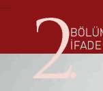
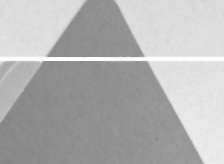
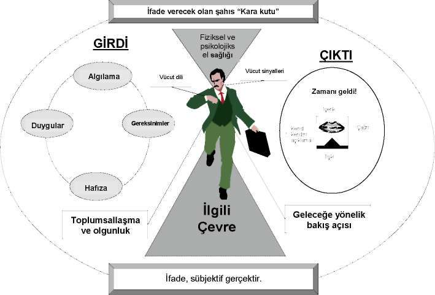
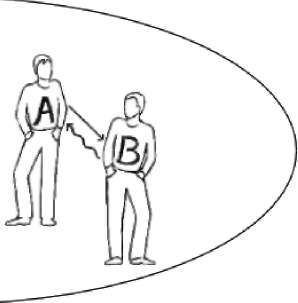
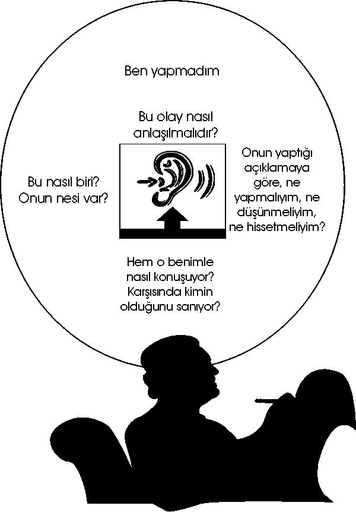
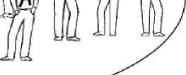
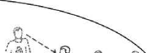

HEDEFLER, HEDEF ve DAVRANI Ş LAR,
ÖĞRENME - ÖĞRETME STRATEJİLERİ, DEĞERLENDİRME STRATEJİLERİ
İFADE'ALMA KAVRAMI

BÖLÜM
İFADE ALMA KAVRAMI VE İFADE ALMANIN AMACI 1. BÖLÜM: İFADE ALMA KAVRAMI VE İFADE ALMANIN AMACI 1.1 İfade Alma Kavramı
Soruşturma ile ilgili olarak mağdur, şüpheli veya muhbir durumundaki şahısların suç hakkında bildiklerini, gördüklerini ve duyduklarını açıklamalarına ifade denir (Erdoğan, 2006).
İfade alma, suçun meydana gelmesiyle birlikte, suçla ilgili her türlü bilginin elde edilmesi amacıyla, suçla ilgisi olan ve suç hakkında bilgi sahibi olanların ne bildiğinin öğrenilmesi faaliyetidir (Kapusuz, 1999: 16).
İfade alma, soruşturmacının işine yarayabilecek bilgilere sahip olduğu sanılan kimselerle yapılan görüşmedir (Şenel, 1977: 99).
01 Haziran 2005 tarihinde yürürlüğe giren 5271 sayılı Ceza Muhakemesi Kanunu’na ve Yakalama, Gözaltına Alma ve İfade Alma Yönetmeliği’ne göre; ifade alma, şüphelinin kolluk görevlileri veya Cumhuriyet savcısı tarafından soruşturma konusu suçla ilgili olarak dinlenmesini ifade etmektedir (CMK
Madde 2; YGAİAY Madde 4).
İfade alma kavramı, kanuni tanımı ile sadece şüphelinin dinlenmesini içermektedir. Ancak pratikte “ifade alma” kavramının, aynı zamanda bilgi alma faaliyeti için de kullanıldığı görülmektedir. YGAİAY’nin 4’üncü maddesine göre; bilgi alma; “Bir suçun tespiti ve aydınlatılmasına yönelik olarak, henüz suç işleme şüphesi altında bulunmayan kişi veya tanık veya mağdurun dinlenmesini ve tutanağa geçirilmesini” ifade eder (Dönmezer ve Yenisey, 2004: 39).
Bu açıklamalar ışığında ifade almayı, suça katılan kişilerle (örneğin, mağdur, tanık, şüpheli) kriminal taktik esaslarına göre planlanarak hazırlanıp yürütülen bir görüşme olarak tanımlamak mümkündür (Demirbaş, 1996: 23).
İfade alma işlemi bu yönüyle planlı bir çalışma, polisin ön hazırlığını gerektiren suç soruşturma sürecine ilişkin bir kolluk faaliyetidir.
Sorgu kavramı ise ifade almadan farklı ve onu da kapsayan daha ileri bir aşamayı ifade etmektedir. Hakimin ortaya çıkan şüpheyi aydınlatmak üzere sanığı dinlemesine, onun bilgisine başvurması faaliyetine “sorgu” denilmektedir (Şafak, Bıçak, 2002: 225).
01 Haziran 2005 tarihinde yürürlüğe giren CMK’ya ve YGAİAY’e göre; sorgu, şüpheli veya sanığın hakim veya mahkeme tarafından soruşturma veya kovuşturma konusu suçla ilgili olarak dinlenmesini ifade etmektedir (CMK
Madde 2, YGAİAY Madde 4).
1.2 İfade Almanın Amacı
Genel olarak ifade almanın amacı, bir konuyla ilgili bilgi toplamak olsa da görüşmelerde takip edilen hedeflere göre değişkenlik göstermektedir. İfade almaya konu olan olayların ve dinlenen kişilerinin özellikleri de bu değişken-likten etkilenmektedir. İşlenmiş suç olaylarının aydınlatılmasında, yeterli fiziki doküman ya da tanıklık yapacak bireyler bulunmadığında, şüphelinin hukuki kurallar çerçevesinde ifadesinin alınması büyük önem taşımaktadır.
Şüphelinin ifadesinin alınması, soruşturmanın çok önemli bir aşamasıdır ve bu konuda profesyonelce davranılması gerekir. Olası suç ortaklarını zararsız duruma getirebilmek için gerçeği öğrenme, kanıt toplama ve suçluyu adalete teslim etmek temel amaçtır. Bunun yerine getirilmesi için birçok amaç oluşturulabilir. Bazı bilgiler, nitelikleri itibariyle, ancak ifade alma esnasında elde edilebilmektedir. Örneğin ifadesi alınan şüphelilerin niyetleri, gerekçeleri, motivasyonları, duyguları ve itirafları bu süreçte daha çok anlaşılır. Bu bağlamda ifade almada aşağıdaki amaçlara ulaşmak hedeflenmiştir. Bunlar: a. Suç hakkındaki gerçeği ve suçu işleme yöntemini öğrenmek, b. Şüphelinin, suçluluğunu kabul etmesini ya da itiraf etmesini sağlamak, c. Suç olayının gerçekleşme şekli ve suçun işlendiği şartları oluşturan tüm unsurları elde etmek,
d. Soruşturmacıların, kullanılabilir mantıklı sonuçlara ve yargılama sürecinde davayı yürütmeyi sağlayacak sağlam bilgileri elde etmelerini sağlamak.
e. Suçu çevreleyen olayları ve şartları tarif etmek.
f. Maddi kanıtları ortaya çıkarmak, (örneğin; çalınan mallar, belgeler, silahlar, uyuşturucu gibi) g. Şahıs tarafından kendini savunmak için sunduğu delili onaylayan ya da geçersiz kılan unsurları kontrol etmek
h. Suçludan, olası suç ortaklarının isimlerini elde etmek ı. Üstü kapalı bir kabullenme elde etmek ve bu sayede şüphelinin suça ne şekilde karıştığını anlamak.
i. Sözlü ya da yazılı itirafları toplamak.
k. Haksız olarak suçlanan birini, suçlanmasını sağlayan olayları açığa çıkararak, suçsuzluğunu göstermek.

ALMANIN ÖNEM İ VE İŞ LEV İ
BÖLÜM
Ö N E M İ VE İŞLEVİ


BÖLÜM
İFADE ALMANIN ÖNEMİ VE İŞLEVİ
2. BÖLÜM: İFADE ALMANIN ÖNEMİ VE İŞLEVİ
2.1 İfade Alma İşlemlerinin Önemi ve İşlevi İfade almanın amacı, meydana gelen olayın aydınlatılması, gerçeğin ve doğrunun ortaya çıkarılmasıdır. Gerçeğe ulaşmak bakımından ifade alma işleminden elde edilen bilgilerin doğru bilgiler olması ve ifade alma işlemlerinin doğru bilgiyi elde etmeye yönelmesi gerekmektedir.
Bu amaca ulaşmak için şüphelinin konuşmasını ve soruşturmaya konu olaya ilişkin açıklamalarda bulunmasını sağlamak, soruşturma işlemlerini yürüten polis bakımından öncelikli amaçlardandır. İfade alma işlemleri ile polis, olayın meydana geliş şekline, ifadesi alınan kişilerin olayın içindeki konumlarına ve olaya ilişkin bilgiyi öğrenme tarzına göre olay hakkında farklı şekillerde bilgi sahibi olacaktır.
İfade almanın diğer bir amacı daha bulunmaktadır. Bu amaç, şüphelinin savunmasına hizmet etmektir. Bu iki yönlü ilişkide polis maddi gerçeğe ulaşmak isterken şüphelinin açıklamalarına ihtiyaç duyacak, aynı zamanda şüpheli de açıklamalarıyla kendisini savunacak ve kendi açıklamalarını bir savunma aracı olarak delil niteliğinde ileri sürecektir (Kapusuz, 1999: 32).
İfade alma işlemleri, olayın aydınlatılmasının da önemli bir aracıdır. Çünkü şüpheli, sadece bir usul nesnesi değil aynı zamanda bir ispat aracıdır. Yani şüphelinin beyanları maddi anlamda bir delil aracı olup delil değerlendirmesi çerçevesinde mahkemenin bilgi kaynakları arasında yer alır. İfade alma kavramının, yeni CMK ve TCK’ya uygun olarak yürürlüğe konulan YGAİAY ile birlikte kapsamı daraltılmıştır. Ay rıca CMK 43’e göre de polisin olayla ilgili bilgisine başvurduğu şüpheli dışındaki kişileri “tanık” olarak sıfatlandırması ortadan kalkmıştır.
CMK yürürlüğe girmeden önce olayla ilgili bilgisine başvurulan tanık, müşteki, suçtan zarar gören vb. herkesin şüpheli gibi ifadeleri alınmaktaydı. Ancak 1 Haziran 2005 tarihinde yürürlüğe giren YGAİAY, yeni bir kavram olarak “bilgi alma” kavramını kabul etmiştir. Bilgi alma ise “bir suçun tespiti veya aydınlatılmasına yönelik olarak, müşteki ve suçtan zarar gören ile suç işleme şüphesi altında bulunmayan diğer kişilerin dinlenmesini ve tutanağa geçirilmesini ifade etmektedir. Soruşturma evresinde somut olayla karşı karşıya kalan kolluk görevlisi, olaya ilişkin bilgisi, görgüsü olan kişileri tanık sıfatıyla dinleyemeyecek, ancak olayın aydınlatılması amacıyla bu kişilerin beyanına başvurabilecektir.
Gerçeği araştırmanın amacı her zaman bir itirafı sağlamak değildir. İtiraflar bazen kuşku ile karşılanır ve mahkemede bu durum hep konuşulur (Eldefon-so; Coffey ve Sullivan, 1972: 181). İtiraf ifade alma işlemleri sırasında kendiliğinden olmalıdır. Ülkemizde incelemelerde bulunan İşkence ve Kötü Muamelenin Önlenmesi Komitesi de (CPT) bir raporunda şüphelinin ifadesinin alınmasının önemli bir görev olduğunu, bunun özel bir eğitim gerektirdiğini, bu tip bir ifade alma işleminde en önemli amacın ise “soruşturma içerisinde problemlerle ilgili gerçeği bulmak için tam ve güvenilir bilgiyi elde etmek olup, 19
ALMANIN ÖNEMİ VE İŞLEVİ
zaten suçlu olduğu varsayılan birinden itirafını duymak için yapılmaması gerektiğini” vurgulamıştır (AB-Türkiye Mali İşbirliği Proje Fişi, 2002).
Soruşturma başlangıcında var olan bazı şüphelerin giderilmesi ya da şüphelerin desteklenmesi ve gerçeğe ulaşılması ancak şüphelinin doğru ifade vermesi ile mümkündür.
Bu nedenle, ifade almanın işlevi şüphelinin her ne pahasına olursa olsun itirafını sağlamaya yönelik olamaz. Şüpheliye isnat edilen fiilin bildirilmesinden sonra şüphelinin meramını anlatabilme ilkesinin sonucu olarak kendisini bu yolla savunabilmesi mümkün olmaktadır. Bunun sonucu olarak, ifade almada şüphelinin itirafını sağlama değil, şüphelinin de savunması vasıtasıyla gerçeğe ulaşma amacı söz konusudur. Böylece, şüphelinin meramını anlatabilme hakkı ve kendisini etkili bir biçimde savunabilmesi, ifade almanın öncelikli amacıdır.
Bu yönüyle şüpheli ifadeleri, soruşturma evresinde polisin temel bilgi kaynakları arasında yer alır (Thomas, 2005).
Sonuç olarak ifade almanın amacı, öncelikle şüpheliye savunma hakkı tanımak, aynı zamanda maddi gerçeğe ulaşmak ve olayı aydınlığa kavuşturmak-tır. Bu nedenle, şüphelinin yaptığı açıklamalar doğruya yaklaştığı ölçüde hem kendisini savunmak açısından hem de olayı aydınlatmak açısından önem ta
şımaktadır (Kapusuz, 1999: 33).
İfade almanın ya da ifadenin iki önemli fonksiyonu vardır. Birincisi, alınan ifadenin sonucu olarak yeni esaslı gerçeklerin tespiti ve araştırılan olayla ilgili karar verilmesidir. Bu şekilde, soruşturulan olayla ilgili olarak tespitler ve araştırma şekillenebilecektir. Örneğin, olaya karışmış başka kişiler varsa, onların tespiti ve yakalanması mümkün olur.
İkincisi, yapı taşlarına benzer deliller olarak alınan ifadeler, savcılığın iddianameyi hazırlamasında ispata yarayacak ve suç isnadına esas teşkil edecek; yargılama aşamasında ise delillerin değerlendirilmesine dayanak oluştura-caktır (Demirbaş, 1996: 75).
Şüphelinin savunmasına ve olayın aydınlatılmasına hizmet eden ve olayla ilgili kuvvetli şüphelerin doğrulanması sırasında ortaya çıkan yeni gerçekler ve bu konuda şüphelinin yaptığı açıklamalar, ayrıca bunların ileriki aşamalarda delil olarak kullanılması ve ispat vasıtası olması tamamıyla ifade almanın temel işlevleri arasında yer almaktadır.
Polisçe alınan ifadeler vasıtasıyla yönlendirilen soruşturmanın sonucunda savcılık iddianamesi, ulaşılan deliller ve bilgiler üzerine şekillenmekte ve bu temel üzerine bina edilmektedir.
Soruşturmada şüphelinin ifadesinin alınmasının sebebi belli şüpheler üzerine olayın araştırılması ve şüphelinin olayla ilgili bilgi ve görgüsünün veya olayla bağlantısının ortaya çıkartılmasıdır. Bu işlem yapılırken başlangıçta var olan şüphelerin kesinlik kazanması ve doğrulanması arzu edilir.
Yine bu konuda özetle belirtmek gerekirse soruşturma sırasında ifade 20
BÖLÜM
İFADE ALMANIN ÖNEMİ VE İŞLEVİ
alma vasıtasıyla elde edilen bilgiler ve şüpheli beyanları kovuşturma evresi için önemli bir kaynak teşkil etmektedir. Kovuşturma esnasında hakimin yapmış olduğu sorgulamada genellikle yeni gerçeklere ulaşılmaz. Yeni gerçeklere ulaşılması ya da yargılamanın mecrasının farklılaşması ancak şüphelinin polisteki ifadelerini reddi ile mümkündür. Soruşturmada elde edilen gerçekler muhakeme esnasında delil değerlendirilmesi hususunda yegâne bilgiler olarak varlık gösterirler (Kapusuz, 1999: 35).
2.2 Türkiye’de Polisin Suç Soruşturma Sürecindeki Yeri Polis, rolünün gereğini yerine getirirken zaman zaman çatışan ya da fikir birliği temsil eden durumlar ortaya çıkar. Örneğin; polis bir suç olayında suçlunun tutuklanması mı yoksa ona ateş edilerek durdurulması mı gerektiği konusunda karar yetkisini kullanır. Polis elbette bu yetkisini kullanırken durumu çevreleyen koşullarla ve bu koşullarda neler yapması gerektiği konusunda mantıksal bir değerlendirme yapar sonra uygulamaya koyar (İçli, 2004: 472). Polisin yaptığı değerlendirme ve bunun sonucundaki uygulaması olumlu veya olumsuz karşı-lanabilmekte, başarılı veya başarısız olarak yorumlanabilmektedir.
Toplumun polisten beklediği çok çeşitli ve zor görevler vardır. Polis kendisinden beklenen bu görevleri yerine getirirken sıklıkla çelişkiye düşer. Vatandaşın desteğini her zaman elde edemez ve suçu tümüyle önleyemez, suçu önlemek için yaptıklarının standart bir ölçüsü yoktur (İçli, 2004: 474). Suçla mücadele ederken dayanak olarak göstereceği standartlar bulunmadığı için olumsuz sonuçlanan uygulamaları nedeniyle eleştirilmekte hatta başarısız bulunmaktadır.
Polis aynı zamanda görevinin etkinliği ve vatandaşların kişisel hakların korunması arasında da ikilem yaşar. Günümüzde etkinlik ve yasallık arasındaki ikilem özellikle önem kazanmıştır (İçli, 2004: 475).
Ülkemizde yeni yürürlüğe giren CMK ile birlikte hazırlık soruşturması ve son soruşturma kavramlarının yerini soruşturma ve kovuşturma kavramları almıştır. Buna göre ceza muhakemesi süreci soruşturma ve kovuşturma olmak üzere iki evreden oluşmaktadır.
CMK’nın 2’nci maddesine göre “soruşturma”, kanuna göre yetkili mercilerce suç şüphelisinin öğrenilmesinden iddianamenin kabulüne kadar geçen evreyi; “kovuşturma”, iddianamenin kabulüyle başlayıp, hükmün kesinleşmesine kadar geçen evreyi ifade etmektedir. Buna göre kendisine suç isnat edilen kişinin sıfatı da farklılık taşımaktadır. Soruşturma evresinde suç şüphesi altında bulunan kişi “şüpheli”dir. Kovuşturmanın başlamasından itibaren hükmün kesinleşmesine kadar suç şüphesi altında bulunan kişi ise “sanık”tır.
Soruşturmada yetkili organlar, savcı (CMK m.160-161), adlî kolluk görevini yürüten kolluk birimleri (CMK m. 164-165 ve PVSK m. 2) ve kısmen de bazı işlemler bakımından sulh ceza hakimidir. Soruşturmanın sonuçlandırılması bakımından soruşturmanın başı olan Cumhuriyet savcısının en büyük yardımcısı emrinde görevli olan adlî kolluk hizmeti yürüten kolluk görevlileridir (İçli, 2004: 477).
ALMANIN ÖNEMİ VE İŞLEVİ
Soruşturmada kendisine önemli görevler düşen makamlardan biri olan genel kolluk, kanunların ihlal edilmesini önleyen ve ihlal edenlerin de cezalandırılması için onları delilleri ile birlikte savcılığa teslim eden kurumdur (Erdoğan, 2006).
Genel kolluğun, Emniyet Teşkilatı Kanunu’na (ETK) göre en önemli ve görev alanı itibariyle de Türkiye’de en büyük parçası Polis Teşkilatı’dır. Bu nedenle Kanun’un ilgili bölümlerinde polis yürüttüğü görevler itibariyle kısımlara ayrılmıştır .
Soruşturmanın yürütülmesinin tamamen polisin ya da Cumhuriyet savcısının elinde olmasına göre pek çok yapısal model ortaya çıkmaktadır. 1 Haziran 2005 tarihinden önceki dönemde Türkiye’de kanuna göre savcılığın, fakat gerçekte polisin soruşturmanın hakimi olduğu model geçerli iken bu tarihten itibaren savcılığın hakimiyetini daha da artırdığı ve soruşturmanın savcı eksenli yürüdüğü yeni bir modele geçilmiştir. Savcı, teorik olarak soruşturmayı idare eder ve araştırmalardan sonuç çıkarır. Soruşturmanın ilk aşaması olan suç işlendiği izlenimi veren bir halin bulunup bulunmadığını belirlemenin özünü teşkil eden ve ayrı bir tekniği gerektiren bilgi edinme ve araştırma ise bir kolluk faaliyeti olarak kolluk tarafından yürütülür.
Uygulamada ise görünen odur ki; savcının soruşturmayı idare etmesi teorik bir kavram olarak kalmakta, soruşturma polise havale edilerek, savcı sadece polisin yaptığı araştırmaların sonucuna göre, masa başında kamu davası açılmasına veya takipsizliğe karar veren bir sonuç çıkarma makamı haline gelmiş
bulunmaktadır (Kapusuz, 1999: 11). Mevcut iş yükü bakımından da savcının Kanunun beklediği nitelikte ve yapıda bu işlemleri yerine getirmesi mümkün görülmemektedir. Kısacası soruşturma işlemleri halen çoğunlukla savcının talimatları çerçevesinde polis eksenli yürümektedir.
Suç soruşturmasının arkasındaki temel varsayım insanların mükemmel olmadıkları ve yaşamları süresince sık sık veya zaman zaman hata yaptıklarıdır.
Suç işledikten sonra soruşturmacılar tüm şüphelilerin arkalarında onları fail olarak belirlemek için bazı şeyler bırakacaklarına ve bunun onların soruşturma sürecinde işe yarayacağına inanırlar (İçli, 2004: 478). Bu çerçevede uygulamada polisin ve kolluğun öne çıkmasının bir sonucu da araştırma ve bilgi edinme için polisin yetkilendirilmesidir. Suçun aydınlatılması ve şüphelinin ikrarı polisin elde ettiği veya edeceği bilgilere bağlıdır. Bu nedenle polis, hem teknik anlamda bilgi edinme ve delil elde etme şansına sahip olmalı, yani kriminalistik konusunda bilgi sahibi olmalı ve hem de şüphelinin ikrarını sağlayacak hukuki yetkiye, yani ifade alma yetkisine sahip olmalıdır (Kapusuz, 1999: 11).
Soruşturmanın uygulamada büyük ölçüde kolluğun elinde olduğu, savcının sadece kamu davası açan veya takipsizlik kararı veren bir tasdik makamı durumuna geldiği bir durumda, polisin bilhassa ifade alma konusunda yetkili ve yükümlü olması, soruşturulan olayın eksiksiz ve gerekli bilgiler elde edilmiş olarak kovuşturma evresine taşınması bakımından büyük öneme sahiptir (Kapusuz, 1999: 12).
Suç faillerini meydana çıkaracak ipuçlarının araştırılması i şinin bir dedektif-22
BÖLÜM
İFADE ALMANIN ÖNEMİ VE İŞLEVİ
lik işi olduğunu unutmamak gerekir. Bu durum karşısında, ilk zamanlar, savcının soruşturmayı isterse kolluğa yaptırabileceği kabul edilmekle araştırma sorununun çözülmesine çalışılmıştır. Yasa koyucunun tutumu da budur. Ancak kendisine savcının bir çeşit yardımcısı payesi verilen kolluğun bu araştırmayı nasıl yapacağı düzenlenmemiştir (Erdoğan, 2006).
Polis, çoğunlukla ifade alma işlemini, suçun araştırılması ve tespitine ilişkin savcıdan aldığı direktif üzerine yapar. İfade alma işlemi için savcıya intikal etmiş bir suç olduğu izlenimi veren bir durumun bulunması gerekir.
Karşılaştırmalı hukukta bu konuda değişik modeller bulunmaktadır. Bunların ilki, soruşturma veya onun önemli kısmının polisin elinde olduğu modeldir: İngiltere de polis, soruşturmanın hakimidir; polis, soruşturma ve delillerin toplanmasından tek başına sorumludur. Aynı durum ABD de geçerlidir. Burada da polis, hazırlık aşamasında savcılıktan bağımsız delilleri toplar. Danimarka’da da 1978’ den beri polis makamları (şüphesiz Adalet Bakanlığının denetimi altında), polis işleri denilen basit olaylarda davayı açarlar ve diğer olaylarda soruşturmalarının sonuçlarını dava açmak üzere savcılığa devrederler. İkinci modelde, savcılığın bireysel olaydaki talimatıyla bağlı olmak üzere, polisin asli bir yetkisi şeklinde ortaya çıkar. Fransız polisi cumhuriyet savcısının talimatlarını soruşturma faaliyetlerinde dikkate almak suretiyle kendi yetkisine sahiptir. Üçüncü model de Almanya ve Türkiye’de ki sistemdir. Kanuna göre savcılığın, fakat gerçekte polisin soruşturmanın hakimi olduğu sistemdir.
Hollanda’da da bu sistem geçerlidir. Dördüncü model ise, 1989 reformundan sonra İtalya’da geçerlidir. Burada, adli polis kendi inisiyatifi, ihbar veya adli makamların talimatıyla soruşturmaya başlar. Bunun yanında savcılığın kovuşturma hareketleri öngörülür. Bu sistem, Anglo-Amerikan ve Kara Avrupası sistemlerini bağdaştırmayı denemiştir (Demirbaş, 1996: 8).
Kolluk savcının isteği veya emri üzerine araştırma yapmakta ve suçla ilgili bilgi edinmektedir.
Bu durumda, polisin araştırması ve bilgi edinmesi yoluyla ilerleyen soruşturmada, bilgi edinme yollarından birisi de şüphelinin ifadesi ve ikrarıdır. İşte, şüphelinin ikrarını sağlama ve soruşturmayı bu yönde ilerletme işi uygulamada polisin görevi haline gelmiş olup, bunu sağlamada polis ifade alma işlemlerine başvurmaktadır. Polisin ifade alma işlemlerindeki yeri, soruşturmanın başlangıç safhasında, savcının talimatı üzerine olayın araştırılması ve konu hakkında bilgi toplanması faaliyetine dayanmaktadır. Polisin ifade almadaki önemi ise, suçu araştıran polisin bilgisine, delil elde etmedeki başarısına, savcı yardımcısı olarak görev yaparken ne kadar hukuki davrandığına, kriminalistik bilgisine ve elde ettiği bilgileri değerlendirme yeteneğine bağlıdır (Kapusuz, 1999: 13).


•ADE ALMADA ALGILAMA, İLETİŞİM VE POLİSİN TOPLUMDAKİ ROLÜ
^ İFA DE A LMA DA ALGILAMA , İLETİŞİM
^./ j VE POLİ SİN TOP LUMDAKİ R OLÜ
3.1 Algılama
3.2 İletişim
•
^

BÖLÜM
İFADE ALMADA ALGILAMA, İLETİŞİM VE POLİSİN TOPLUMDAKİ ROLÜ
3. BÖLÜM: İFADE ALMADA ALGILAMA, İLETİŞİM VE POLİSİN
TOPLUMDAKİ ROLÜ
3.1 Algılama
3.1.1 Giriş
İfadesi alınan şahıslarda verilen her ifadenin kendine ait bir içyüzü bulunmaktadır.
Herkes, yani fail, mağdur ve şahit de dahil olmak üzere, yalnızca direkt olarak olaydan etkilenmez.
^ Nasıl,
^ Neyin,
^ Ne kadar güçlü,
^ Ne kadar net,
Algılanıp algılanmadığı,
^ Şahsi aktifl eştirme,
^ Uyarının türü,
^ Kendi öğrenme süreçleri ve deneyimleri,
^ Gerekçeler, arzular, çıkarlar,
^ Beklentiler ve
^ Hafıza
ile yakın bağlantıda bulunmaktadır.
Sonuçta verilen ifadenin güvenirliği, bu (şahsi) etkilenme faktörlerine bağlıdır.
ADE ALMADA ALGILAMA, İLETİŞİM VE POLİSİN TOPLUMDAKİ ROLÜ
İfade alan her polis, ifadesini aldığı şahsın algıları ile ilgili yapacağı her bireysel kayıtta ve bunu işlerken, çoğu zaman bilinçsiz bozukluklara, değişikliklere, ilave etmelere ve hatalara yenilebileceğinin bilincinde olmalıdır.
Duyu organlarımızla, sürekli çevremizden değişik kaliteye sahip ve farklı anlamlar taşıyan uyarılar alırız. Bu uyarılar farklı şiddetlerle bilinçaltımızda algılanır ve farklı netlikte tekrar çağırılabilir.
Aynı durum, örneğin bir trafik kazasının akışı, nesnel olarak yalnızca bir olay meydana geldiği halde, iki tanık tarafından farklı anlatılır. Her bir tanık tarafından gerçek ve nesnel realitenin algılandığı ve bu nedenden ötürü de tam olarak, ayrıntılı ve bire bir aynı şeklide ifade edildiği sanılabilir.
Tek bir olayın akışı mevcuttur – yine de iki farklı ifade oluşmaktadır.
Ta n ıklardan biri yalan mı söylüyor yoksa yaşanılanla ilgili her birinin kendine göre, sübjektif bir gerçeği mi var?
Her bir gözlemcinin bir olayı aynı şekilde algılayıp tekrar yansıtması gerekmez mi?
Yine de farklılıklar neden oluşuyor ve nesnel gerçekten oluşan bu tür sapmalar nereden kaynaklanıyor olabilir?
Çift katlı evlerden oluşan bir sitede bulunan bir evin dış duvarına (komşunun arsasına bakan cephede) bir merdiven yaslanmış durumda. Saat gece 01:00’i geçmiş. Merdivenin üst kısmı, küçük bir pencerenin dibine kadar ulaşıyor. Bu pencerenin yalnızca pervazları açık.
Merdivenin en üst basamağında iki bacak görülüyor.
Bedenin üst kısmı, pervaz tarafından örtülü durumda ve kaldırımdan seçilemiyor.
Düşünün, bu sahne filme alınmış ve farklı insanlara (farklı şahsi kariyere, eğitime, mesleğe, deneyime, görüşe sahip) birbirinden bağımsız olarak gös-terilmiştir.
Bu nesnel gerçek (film olarak sabit ve akışı hep aynı olduğundan) farklı gözlemciler tarafından nasıl algılanır ve işlenir? Bu sahne nasıl yansıtılır? Nasıl bir ifade verilir? Sizin fikrinize göre olay ne ?
bir hırsızlık çabası ev sahibinin 15 yaşındaki oğlunun eve geç geldiğini örtbas etmek için gösterdiği ümitsiz çaba aşık gencin sevgilisini etkileme ve ona yakın olma çabası ev sahibinin, anahtarı yazlıkta unuttuğu, evde kimsenin olmadığı ve yedek anahtarı da bulunmadığı için eve girme çabası veya ne ???


BÖLÜM
İFADE ALMADA ALGILAMA, İLETİŞİM VE POLİSİN TOPLUMDAKİ ROLÜ
Tek bir nesnel durum, farklı sübjektif yorumlara neden olmaktadır.
Bu yorumlar, ilgili gözlemcinin eğitim süreçlerine, deneyimlerine, önyargılarına, anlayışına vs. bağlıdır.
Buna benzer durumlarla mesleki açıdan daha önce karşılaşmış olan (deneyim !) üstelik bu bölgede sık sık hırsızlık olduğunu bilen (bilgi, ön bilgi) bir polis memuru – bundan etkilenerek – bu durumu, merdiveni son haftalarda birçok kez algılamış ve bu esnada bir erkekle bir bayanın fısıldayarak konuştu
ğunu duymuş olan bir gazete dağıtıcısından farklı değerlendirecektir.
Algılaması, geçmişte buna benzer durumları hatırlaması sayesinde etkilenebilir.
Gazete dağıtıcısı, bütün olaya başka bir ön bilgiye, başka bir deneyime ve farklı bir bilgi seviyesine sahip olduğu için, polis memurundan değişik bir anlam verecektir.
Gerçekte ise ev sahibi yalnızca kötü kapatılmış, rüzgâr nedeniyle gürültü yapan ve uykusunu kaçıran pervazları sabitlemeye çalışmıştır.
Tek ve aynı durum – bir gözlemci için doğrudan doğruya bir hırsızlık denemesi mevcutken, diğer gözlemci için bu sevgilisini gizlice ziyaret eden bir gençtir. Hiçbiri yalan söylemiyor, her ikisi de görünüşe göre muhakkak nesnel gerçeği kendi algıladığı gibi iddia ediyor…..”çünkü kendi gözlerimle gördüğüm ve kendi kulaklarımla duyduğum, (doğrusu: benim gerçeğimdir) gerçektir!”
İnsana ilişkin algılama, çevrenin resimsel bir sureti değil, sübjektif bir süreçtir.
Duyu organlarımıza isabet eden uyarıların hepsi gerçekten işlenip kabul edilmez.
Daha çok uyarıların arasından bir ayıklama yapılır.
Tarafımızdan kabul edilen ve algılanan uyarı materyalleri,
^ Uyarının türüne
^ Aktifl eştirme ve dikkate
^ Kendi eğitim süreçlerimiz ve deneyimlerimize
^ Anlayış ve ön yargılarımıza
^ Gerekçe, arzu ve çıkarlarımıza
^ Tecrübelerimize
bağlıdır.
3.1.2. Seçici ve Yapıcı Algılama
Mesleki özgeçmiş, belirli alanlarda daha hassas bir algılamaya yol açar -
bu yalnızca polislerde böyle değildir.
ADE ALMADA ALGILAMA, İLETİŞİM VE POLİSİN TOPLUMDAKİ ROLÜ
Bir durumun olası algılama boyutlarının tümünün arasından, bizim için bir anlamı olan - bu suretle de bize esaslı ve önemli görünen bir algılama seçeriz.
Şoförün kaza yaptıktan sonra kaçtığı bir trafik kazasında tanık, aracın plakasını, kaçtığı yönü ve aracın binek araç mı kamyon mu olduğunu aklında tutar ve bunu bu şeklide de yansıtır. Bu durumda, bir sürü başka boyut da algılayabilirdi: renk, marka ve tip, hasarlar, cinsiyet, yaş, araç kullanıcısının görüntüsü, diğer araçların duruş biçimi, kaçış yönü, yayaların durdukları yer, trafik lambası vs. – ancak bunlar kendisi tarafından hariç tutulmuş ve kendisi için önemli olmadığı için algılanmamıştır.
Algılanmaya müsait her şey, gerçek anlamda algılanmaz.
Her zaman önemin değerlendirmesine bağlı olarak aradan bir seçim yapılır.
Saldırıya uğramış olan emekli için, failin yanı başında park etmiş olan aracının markası, tipi ve plakasının anlamı yoktur ve önemli değildir. Algılamasını ister istemez tehlike durumuna ve kendini korumanın olasılıklarına yöneltir:…
etrafta bana yardımcı olabilecek kimse var mı,.... sokakta kimseyi görme-dim,....yanımızdan hiç araba geçmedi , kimse camdan dışarıya bakmadı.
Bu durumda park edilmiş ve içinde kimsenin bulunmadığı bir araç onun için önemli değildir. Konsantrasyonu ve dikkati, kendini korumaya yöneliktir.
Algılaması, bu amaca uygun uyarılara yönelmiştir.
Bu boyutta onun için failin görünüşü ve davranışı daha az –tehlike durumundan kaçmak ise daha öncelikli bir anlam taşıyor olmalıdır. Aklında failin konuşma şeklini, şivesini, vücut yapısını, konuşma hatasını, ifadesini, görünü
şünü, kıyafetini, ırkını ve menşeini, yaşını ve cinsiyetini, dikkat çeken özelliklerini ve özel belirtilerini tutmak önem teşkil etmiyordur.
Polis bu tür durumlarda müdahale ettiğinde, çoğu zaman faille direkt temasta bulunmuş olan mağdurun neredeyse hiç detaylı ve kapsamlı tanımlama yapamıyor olmasını anlayamamaktadır.
Yüzleştirmeler de çoğu zaman gerekmez.
Buna karşılık, olayda kendileri de mağdur durumuna düşmemiş olan – bu nedenle de (cinai bir suçun mağduru olmadan) direkt strese maruz kalmamış
olası tanıklar, çoğu zaman daha kesin tanımlamalarda bulunabiliyorlar.
Bir yüzleştirme durumunda da, büyük olasılıkla bir faili tekrar tanıma ihtimalleri bulunuyor.

BÖLÜM
İFADE ALMADA ALGILAMA, İLETİŞİM VE POLİSİN TOPLUMDAKİ ROLÜ
Bunun açıklaması ise, apaçık ortada. Daha önce de değinildiği gibi, mağdur kendini acilen koruma güdüsü ile bir stres yaşıyor ve algılarını bu motivasyona uygun şekilde seçiyor.
Bu durumun sübjektif önemsiz boyutları (örneğin park edilmiş araç, failin görüşünü) hariç tutuluyor. Güvenli bir mesafeden dikkatle – belki de çığlık şeklindeki bir imdat çağrısından özellikle aktif hale gelmiş – olayı izleyen tanıklar, mağdurdan farklı bir motivasyona sahiptirler.
Onlar için durumun farklı boyutları, mağdura oranla daha önemlidir.
Herhangi bir şeklide (intikal eden polislere) olayın aydınlatılmasında yardımcı olmak isteyen bir tanık, failin kaçış yönünü, boyunu ve kıyafetini ve de park edilmiş aracın olası varlığını, olayın içinde bulunan mağdurdan daha fazla aklında tutar. Algılamasının hassasiyeti bu motivasyondan dolayı (“…tanık olarak benden faili tarif ediyor olabilmem beklenir…”) desteklenmiştir.
Ancak burada tanığın / bilgi veren şahsın, soru soran yasayı uygulayan organa karşı, faili tam olarak veya yeterince uzun süre gözlemleyemediği halde, kendisini tanımlayabilmeye sorumlu hissetmesi tehlikesi de bulunmaktadır.
(“…Kaldırımda iki kişiyi gördüğümü söylediğim halde, onların erkek mi kadın mı olduğunu bile söyleyemezsem, ne duruma düşerim?... Gerçekten inandırıcı mıyım?... Her şeyi, güven içinde bulunduğum evimden izlediğim halde, çok heyecanlı olduğum için kimseyi tanımlayamayacağımı söylersem, polis şimdi hakkımda ne düşünür?...”.)
Bir tanık algılamasının ifade gücünün değerlendirmesinde, bu boyutun da dikkate alınması gerekmektedir.
(Tanıkların, bilgi veren şahısların, mağdurların “kendilerini sorumlu hissetme” hatası).
Algılama ayrıca hafızamızla tamamlanmaktadır.
Algılama yapıcıdır-
nesnel doneleri aşar ve bizi sonuca yanlış yönlendirir Özellikle polisler bugüne kadar edindikleri mesleki deneyimlerden dolayı, daha kolay sohbet etme eğilime yeltenirler.
Bu ise, diğer insanlardan farklı amaçları iddia ediyorlar, belirli davranış şe-killerini yorumluyorlar, mevcut algılama boşluklarını dolduruyorlar, görünüşe göre “mantıklı” bağlantılar kuruyorlar ve zararsız durumlarda bile suça ilişkin davranış biçimlerinin neticesini çıkartıyorlar anlamına gelmektedir.
Bunun tersine (bir polis için görünüşe göre mantıklı ama çoğu zaman da yanlış!) bu tür sonuçlar, “ortalama halktan” otomatik olarak beklenmemelidir (“…o iki adamın dikkatli bir şekilde binaları izlemeleri size tuhaf gelmedi mi?...
Aman, amaçları ne olmuş olabilir ki?... O iki adamın hayran hayran mimariyi incelemek yerine, hedefli bir şekilde kendilerine hırsızlık yapabilecekleri uygun bir ev aradıkları dikkatinizi hiç mi çekmedi!..”)).
ADE ALMADA ALGILAMA, İLETİŞİM VE POLİSİN TOPLUMDAKİ ROLÜ
Buna tamamlayıcı olarak da, aşırı tehlike durumlarında (=Stres) dikkatimizin ve algılamamızın ister istemez (geniş kapsamda istemsel denetlememizin dışında) güçlü bir şekilde durumun tehlikeye ilişkin boyutlarına sınırlanabile-ceğine de (“tünel bakışı” denilen boyut) işaret edilmesi gerekiyor.
Bunun neticesinde de, suça ilişkin bir olayın (= Stres / Korku) mağdurla-rının verdikleri fail tanımlamalarının neden çoğu zaman tam olmadıkları da açıklanmaktadır. Mağdurun yaşadığı korku ne kadar yoğunsa, bu tanımlamanın doğruluğunu o kadar etkilemiş olacaktır.
Önem teşkil eden fail tanımlamaları, yaralıdan çok yaralanmamış mağdur-lardan beklenebilir.
3.1.3. Algılama Çarpıklıkları
Algılamaların doğruluğu ve onların anlatımı, benzer durumların örtüşmesinden de etkilenebilir.
Süpermarket’te çalışan bir kasiyer, bir müşteri hakkında anlatacağı detaylı algılamayı veya önemli detayları, belirli bir süre sonra hatırlamakta zorluk çekecektir.
Ortaya çıkan hafıza hataları, bir iş günü esnasında birbirine geniş ölçüde benzeyen aynı türden olayların çokluğundan kaynaklanır. Birbiri üzerine “ör-tüşürler”.
Aynı durum kendini polislerin tanık sıfatıyla mahkeme ve resmi daireler önünde çoğu zaman aylar sonra verdikleri ifadelerde belli eder. Memurlar bu süreçte birbirinden özünde fazla farklılık göstermeyen (örneğin sakin trafikte rutin mesleki eylemler, kırmızı ışığa riayet edilmediği için ceza kesme, vs.) birçok benzer durumla karşılaşmış ve algılamışlardır).
Polislerde benzer durumların algılanması nedeniyle mesleklerine bağlı olan örtüşme, o tarihle doğrudan olayla karşı karşıya kalmış olan özel kişilerde olduğundan (bu özel kişinin benzer materyali bulunmuyor, bu süre zarfında bu tür örtüşen birçok olayla deneyim yaşamamış) daha sık ortaya çıkabilir.
3.1.4. Özet
Algılama, çevrenin resimsel bir tespiti değildir.
^ Objektif gerçek (gerçekten nasıl meydana geldiği) nesnel faktörler tarafından (ön bilgiler, beklentiler, anlayış, deneyim, vs.) etkilenir, düzeltilir ve bozulur.
^ Her uyarı algılanmaz - algılama seçicidir. Algılama bozuklukları, detayların atlanmasına yol açabilir (seçici algılama)
^ Bölük pörçük algılamalar, benzer olayların hatırlanması ile toparlanır ve tamamlanır - algılama yapıcıdır ve sonuçlandırmanın süreçlerini de içerir. Algılama bozuklukları, detayların eklenmesine yol açabilir!

BÖLÜM
İFADE ALMADA ALGILAMA, İLETİŞİM VE POLİSİN TOPLUMDAKİ ROLÜ
Bu nedenle tanık ifadeleri, üzerinden zaman geçtikçe daha da “ahenkli”
olacaktır. Bu, bilinçli bir şekilde yalan söylenmeden, çelişen bilgilerin atlanması ve eksik verilerin tamamlanması anlamına gelmektedir.
^ Mağdurda bir suça ilişkin eylemin yol açtığı korku büyüdükçe, tanık ifadesi ekseriyetle o oranda hatalı ve eksik olur. Korku ve kızgınlık gibi güçlü duygular, bilgilerin algılanmasını ve anlatılmasını engellerler. Tam tersine, anlamlı olaylar uzun süre sonra dahi doğru ve gerçeğe yakın bir şekilde anlatılabilirler.
' “Kendini sorumlu hissetme” tehlikesi (Mağdurların, tanıkların ve bilgi verecek şahısların, tahkikat yapan polis memurunun olası beklentilerine karşılık verebilme eğilimleri).
^ Yaşanan benzer olayların birbiri üzerine örtüşmesi, net anlatımı azaltabilir.
3.1.5. Kişinin algılanması
3.1.5.1. Giriş
Kişinin algılanması tanımı altında, diğer insanlar ve kendisi hakkında yapılacak değerlendirmenin tüm süreçleri anlaşılmalıdır (insanın karşısındakini ve kendi kendini algılaması).
Algılama süreçlerinin içinde kişinin algılanması süreci önemli bir faktör oluşturmaktadır.
Biz insanlar hangi kriterlere göre yargılıyoruz, hangi özelliklere göre fikrimizi oluşturuyoruz? Bu hüküm, bu fikir algılamamıza ve davranışımıza nasıl etki ediyor? Bunu yaparken hangi hatalara kapılabiliriz?
Bu konular, ifade alma işlemi için dikkate değer anlamlar taşımaktadır.
İnsanın karşısındakini ve kendi kendini algılaması, bilhassa ifade alan memur ile ifadesi alınan şahıs arasındaki paslaşmada dikkate alınmalıdır: Kendimi nasıl görüyorum - karşımdaki beni nasıl görüyor - ve tersi?
3.1.5.2. İlk İzlenim
Bir insanın yorumu ve bunun üzerine yapılacak yargılama, algılayan şahsın
“ilk izlenimi” tarafından çok güçlü bir şekilde etkilenir ve saptanır.
Burada işlenen ise, yalnızca duyu organlarımızla algıladığımız izlenimler değildir.
Bir insandan kazandığımız ilk izlenim, öncelikle kelimelerden oluşmayan sinyaller tarafından etkilenir.
ADE ALMADA ALGILAMA, İLETİŞİM VE POLİSİN TOPLUMDAKİ ROLÜ
Bunlar...
^ Dış görünüş ve kıyafettir
^ Yüzün şeklidir
^ Beden ve endamdır
^ El kol hareketleridir
^ Konuşma biçimi ve ses tonudur.
Bu dış özellikler sayesinde, bir insanla ilgili ilk bilgileri kazanırız.
Bu insanın fikrimize göre nasıl “olduğunu”, nasıl davranacağını ve kendisine ne tür özellikler yakıştırılabileceğine dair sınıflandırır, düzenler ve yorumlarız.
Kişinin algılanmasında da, gözlemci tarafından seçim yapılır ve bu seçimlerden farklı sonuçlar çıkartılır.
Algılanabilecek tüm özelliklerden ve davranışlardan çoğu zaman gözlemcinin yargı oluşturması için gerekli gördüğü olanlar filtrelenir. Bunu yaparken de yalnızca birkaç özellik dikkate alınır.
Belki de daha fazla bilgi verebilecek olan diğer özellikler dikkate alınmaz.
Kişinin algılanmasında, “sonuç çıkarma” (kanuna aykırı sonuç çıkarma) olarak tanımlanan olgudan kaynaklı olarak bir tehlike oluşabilir. Birkaç ger
çekten gözlenmiş olan dış özelliklerden, tespit edilmeyen veya hiç tespit edilebilecek gibi olmayan özelliklerin sonucu çıkarılabilir.
3.1.5.3. Değerlendirme Hatası
^ İnsanların, rol sahiplerine (mağdur, tanık, fail, doktor, avukat, işçi, vs.) olan temel eğilimlerine uygun olarak etkilendikleri “rol modeli” sayesinde, çoğu kez bizim duygularımız da bu insana yansır. Biçilen rol ile çoğu zaman belirli beklentilerle de (kıyafet, konuşma şekli, telaffuz, güvensizlik, ret, vs.) bağlantı kurulur.
^ Merhaba - Etkisi
İlk izlenim (daha çok olumlu veya daha çok olumsuz) çoğu zaman bilinçsizce henüz daha hiç tespit edilmemiş kişilik özelliklerine aktarılır. Bu aktarım ise belirgin bir işaretle veya ön plana çıkan bir özellikle tespit edilir.
^ Mantıklı hata
Belirli özelliklerin / işaretlerin hep birlikte göründüğüne dair yapılan yanlış
(çünkü kontrol edilmeden) varsayımlar:
Üniversite’de okumuş olan, zekidir.
Hafifçe kızaran, güvensizdir de.
Sinirli olan, saygısızdır da.
^ Kendine göre, başkalarının eğilimine hükmetmek.

BÖLÜM
İFADE ALMADA ALGILAMA, İLETİŞİM VE POLİSİN TOPLUMDAKİ ROLÜ
İnsanın kendisinin belirli durumlarda yaşadığı özellikler ve duygular, başkalarına da yakıştırılır. Bununla insanın kendisine ait farklı içyüzü çoğu zaman dikkate alınmaz (herkesin kendine ait bir geçmişi, eğitim süreci, deneyimi vardır ).
Şahsi özellikler, başkalarının değerlendirmesinde etki eder.
^ Tezat prensip
Ortalama bir sporcu, performansı düşük bir grup sporcu arasında olduğundan, ortalamanın üzerinde performansa sahip bir grup sporcunun arasında, çok daha iyi değerlendirilecektir.
^ Benzetme prensibi
Tezat prensibe karşılık:
Aktif suçlulardan oluşan bir grubun içinde “onlarla faal olan” birine, grubun özelliklerini yükleme eğilimi vardır.
Konuşarak ifade edilmeden yansıyan sinyaller - farklı yoğunluklarla -
^ Eğilim veya ret
^ Hâkimiyet veya uyum
^ Aktiflik veya pasiflik
olarak yaşanır.
İlk izlenimin yanı sıra - tüm olası hata kaynakları ile birlikte - hükmün oluşması değerlendirmeyi yapanın
^ O anki şahsi duygusal durumdan
^ Bilgi aktarımının şeklinden ve yönteminden (dolaylı: telefon, resim, raporlar, yazılar… dolaysız: soru sorma, yüzleştirme, ifade alma, tanıtma...)
^ Ön bilgilerden (başkalarının fikri)
^ Değerlendirenin şahsi özelliklerinden (yaz, eğitim, meslek, sosyal sınıf, cinsiyet....)
^ Sosyo-psikolojik içyüzünden (Çevre/Durum)
^ Değerlendirme yapma seviyesinden
etkilenir.
Burada, bir tanığın belirli insanlar hakkında (fail, fiile iştirak eden, mağdur, olayla ilişkisi olmayanlar) verecekleri ifadeleri anlayabilmek için, kişinin algılanmasının içyüzlerini bilmek belirleyici olabilir.
^ Gerçekten hangi değerlendirme olasılıkları elimizde bulunuyordu?
^ Hangi algılamalar nedeniyle hüküm oluştu?
^ Bunu yaparken hangi hatalar meydana gelmiş olabilir?
^ Bu gerçekten gözlemlenebilir miydi?
ADE ALMADA ALGILAMA, İLETİŞİM VE POLİSİN TOPLUMDAKİ ROLÜ
^ Açıkça yorumlanan neydi?
^ Tahmin hangi işaretlere dayanıyor; yok sayılan veya olası ilave edilen neydi?
3.1.5.4. Alınan İfade İçin Önemi
Herhangi bir şekilde ifade alma işlemi ile faal olan her memur, “kendi kişiye yönelik algılamasının” bir insanın değerlendirmesinde ve tahmininde önemli bir rol oynadığının bilincinde olmalıdır.
Bu nedenle, bu kişinin algılanmasının sonuçta kendi algılamasını yönetmesi ve bu insana karşı olan davranışını önemli ölçüde etkilemesi mümkün değildir.
Tahmini fail, bir yaralama ile bağlantılı olarak soruşturma neticesinde araştırılıp bulunmuş ve ifade vermesi için karakola davet edilmiştir Sanık ile o zamana kadar hiçbir şekilde direkt şahsi temas meydana gelmemiştir
Şu ana kadar elde bulunan tüm bilgiler, tanıkların, mağdurların ve bilgi veren şahısların verdikleri ifadelerden türemiştir Ayrıca şahsına ilişkin dahili araştırma tedbirleri (Polise ait elektronik veri işlem sisteminden elde edilen bilgiler, resim dosyasın incelenmesi, farklı makamlara sorma) alınmıştır
Yukarıda tasvir edilen tedbirler, sanık hakkında bir portre çizebilmek - bu insan hakkında bir ilk izlenim elde edebilmek için gerçekleştirilmiştir.
Sanık akademisyendir, 40 yaşındadır, evlidir, 16 yaşında bir oğlu vardır, şehir dışında bir sitede oturuyordur, para cezalarını ödemede gecikiyordur, göçmen temsilcisidir ve “Halk polisi izliyor” girişiminin üyesidir Bilgi veren şahıslar tarafından “çabuk sinirlenen insan” olarak tanımlanmaktadır ve dosyalarda bir yaralama vakasına (aile / akraba-larla kavga) ilişkin bir suç duyurusu ortaya çıkmıştır Bu “kendi kendine edinilmeyen” bilgiler, tahkikatın ilk aşamasında ilgili şahsın ön yargılamasına yol açabilir.
Ancak buna karşılık karşımızda bulunan kişi hakkında kendi kendimize bir
“Portre” çizmemiz daha mantıklıdır.
Gerçekte ise bu şahıs, farklı organizasyonlarda şahsi faaliyetleri ile çevresinde birçok düşman yaratmış olan, polise son derece yakın, sempatik bir insandır Ortaya çıkan suç duyurusu, duruşmada beraat ile sonuçlanmıştır çünkü bir intikam söz konusudur 34


BÖLÜM
İFADE ALMADA ALGILAMA, İLETİŞİM VE POLİSİN TOPLUMDAKİ ROLÜ
“İlk izlenim” - çoğu zaman yanlışlıkla farz edildiği gibi - en iyisi ve en doğrusu değildir.
Verilen bilgiler fazlasıyla sık bir şekilde, eksik, yüzeysel, tek taraflı ve anılan değerlendirme hatalarını içermekteler.
İlk izlenimine güvenen herkes, çoğu zaman yanılır!
Dış özellikler, insanların arasında ilgili durumda ne olup bittiği hakkında önemli bilgiler verebilirler ancak bu özellikler hiçbir zaman “toplam şahsiyet”
hakkında bir açıklama sunmazlar.
İki insan arasındaki sinyallerin anlaşılması ve değerlendirmesi, “iyi insan sarrafını” belli ederler.
İfadeyi alan polis memuru da, çoğunlukla bilinçli olarak, “karşısında bulunan” tarafından anlaşılıp değerlendirilen olumlu veya olumsuz sinyaller yansıtırlar: (“…o beni çoktan yargıladı bile …ona göre ben suçluyum …aslında ne dersem diyeyim, fark etmez, yabancıları sevmediği açıkça belli oluyor …işsizler onun için beladan başka bir şey değil …önyargılı memurları sevmediğimi ona hissettireceğim …ben de ukalalık yapabilirim …onun kibirli laflarını reddettiğimi fark etsin “.)
“İnsan sarrafı” olarak anılan olgunun insanüstü yetenek ile ilgisi yoktur, insanların “içyüzünü anlamak”, daha çok
^ Dikkatle izlemeye ve dinlemeye
^ Gerekçeleri anlamaya
^ Bilgileri geniş kapsamlı toplamaya
^ İnsanlar arası sinyalleri doğru yorumlamaya dayanmaktadır.
İnsan sarraflığı tanımından, psikolojik işaretlerden algılanan bağlamlardan, edinilecek sonuçlar olduğu anlaşılması gerekmemektedir!
3.1.6. Yalanlar
3.1.6.1. İşaretler
Aşağıda belirtilen davranış biçimleri, yalan söylendiğine işaret edebilir: Sık sık
^ Yutkunması
^ Elini saçının içinden geçirmesi
^ Koltukta rahatsız bir şekilde oradan oraya kıpırdaması
^ Ellerinin terlemesi
^ Göz kırpması
^ Göz temasından kaçınması
ADE ALMADA ALGILAMA, İLETİŞİM VE POLİSİN TOPLUMDAKİ ROLÜ
^ Çenesini ovuşturması
^ Kulak memesini çekiştirmesi
^ Sesinin çatallaşması
^ Aşırı açıklama yapması
^ Genel halinin heyecanlı olması
^ Çekingen cevap vermesi vs.
Cümle:
“…biri ifade verirken heyecanlıysa, yalan söylüyordur veya tam tersi : şayet ifade verirken sakinse ve sinirli değilse, gerçeği söylüyordur (o zaman suçsuzdur), her zaman doğru olmak zorunda değil …”
Çünkü birçok kez,
^ Heyecanlı olduğuna dair görülebilen işaretler (sık sık yutkunması, sinirli bir şekilde gözlerini kırpması, terlemesi…) yalnızca “içyüzünün ortaya çıkacağına” dair korkudan değil, suçsuz yere zan altında bulunmaktan ve suçlanmaktan korkuyor olması olarak da yorumlanabilir. Bunun ötesinde ifadesi alınan şahsın, verdiği doğru ifadelere inanılmayacağına dair korkusu, görülebilen heyecan işaretleri ile de dışa vurulabilir.
^ İnsanların “semptomsuz” da yalan söyleyebilecekleri (kızarmıyorlar, ifade verirken heyecanlanmıyorlar, ayrıca dikkat çekmeden konuşuyorlar....)
^ Görünüşe göre tespit edilmiş olan duyguların nesnel izleniminin yalnızca dış etkenlerden (yüz, beden) türetildiğini - bu insanın yüzü ve bedeni sayesinde, gözlemci tarafından, gerçek duygu durumundan bağımsız olarak, bilinçsizce ilk izlenim uyandırılabileceği dikkate alınmaz.
^ Örneğin aşırı yapılan açıklamaları her zaman “yalan söylediğine dair işaret” olarak değil de, o insanın olağan ve sürekli konuşma şekli olabileceği şeklinde yorumlanmalıdır.
3.1.6.2. Değerlendirme
Yalan söylendiğini kanıtlama olasılığı için, uzun vadede gözlemlerken son derece dikkatli olmak ve sayısız değerlendirme kriterlerinden yararlanmak gerekmektedir. Bunu yaparken de bir insanın tüm kişiliği de dahil edilmelidir.
^ Ses tonundaki ve beden dilindeki değişiklikler (özellikle zararsız kısımlardan önem taşıyan ifadelere geçerken) yalan söylendiğine dair olası ipuçları olabilir.
Konuşarak ifade edilen ve konuşmadan ifade edilen sinyaller, çokanlamlıdır.
Ancak bunların toplam örneğinden, kesinlikle bir yalanın varlığına ilişkin işaretlerin sonucuna erişilebilir.
İnsani davranış biçimlerinin içyüzü hakkında bilgi, tehlikeler ve hata kaynakları hakkında bilgi, doğru anlama ve değerlendirme ve tek ve ilgili duruma 36

BÖLÜM
İFADE ALMADA ALGILAMA, İLETİŞİM VE POLİSİN TOPLUMDAKİ ROLÜ
uygun davranış, diğer kriterlerin yanı sıra başarılı bir ifade alma işlemi için önemli bir esas teşkil etmektedirler.
3.2. İletişim
İnsanlar arasındaki iletişim (Latince: communicare, bir şeyi birlikte yapmak, bilgi vermek, paylaşmak), bir ifade alma işlemi esnasında belirleyici bir önem taşımaktadır.
3.2.1. Geleneksel İfade Alma İşleminde İletişim Klasik ifade alma prensipleri aşağı yukarı şöyle:
^ İfade alma işlemi, ifade alan memurun disiplinli yönetimi altında ger
çekleşmelidir.
^ Soruları yalnızca ifadeyi alan memur sorar, ifadeyi veren değil.
Bu “prensiplerle” ifade alma işlemi, zorlayıcı bir karakter kazanır.
Bu esnada ifadeyi alan memur,
^ Kimin ne zaman konuşacağını
^ Hangi konuşma konusunun kimin için açık olduğunu
^ Belirli bir konuya nerede başlanacağı ve nerede bitirileceğini
^ Hangi konuşma zemininin ve hangi ifade davranışının kabul edilebilir olduğunu
^ Kimin ne zaman sonuçlar çıkarabileceğini ve sonuçta
^ Ne zaman ve hangi olayların tutanağa alınacağını da tespit eder.
Bu yapılar eleştirisel biçimde sorgulanacak olursa, aşağıdaki soru ortaya çıkar:
“Bu koşullar altında - bu atmosferde - gönüllü olarak, kim gerçeğe uygun ve kapsamlı bir şekilde ifadeye hazır olabilir?” -
Cevabı basit: …”Herhalde neredeyse hiç kimse”…”
Böylelikle ifade alma davranışı, ifade verme psikolojisine ilişkin araştırma sonuçlarına göre olağanüstü bir çelişki oluşturmaktadır.
Bu nedenle alıştırmaların ve pratiklerin hedefi, ifade alma işleminde başarılı güncel iletişimin kurallarından ve yasallığından yararlanmaktır.
3.2.2. Çağdaş İfade Alma Yönteminde İletişim Güncel deneyimlerden de bilinmektedir ki, sabırlı bir dinleyici olunduğunda çoğu bilgiler ve detaylar öğrenilebilmektedir. Ancak bildirilen tüm detaylar bazen ilgilendirmeyebilir.
Bu nedenle, açıklama yapan şahsı becerikli sorularla veya açıkça ilgisizlikle (el kol hareketi ve mimik) ilginç konulara geçmesine çaba gösterilmelidir.
Açıklama yapan şahsın bu uyarılmaya uyması ile görüşme bilgilendirici ve ilginç kalır.
ADE ALMADA ALGILAMA, İLETİŞİM VE POLİSİN TOPLUMDAKİ ROLÜ
Bu uyarılara uymazsa, dinlemeye karşı olan ilgi azalacaktır.
Buna göre bilgilerin değiş tokuşu, uzlaşılması, iletilmesi, araştırılması ve pazarlığı anlamınca iletişim meydana gelmezse, aşağıdaki ön koşullar gereklidir: 1. Açıklama yapanın ve dinleyenin, her bir diğerinin durumuna ve çevresine kendini adapte etme ve onun gerçeğini kavrama yeteneği (“Uygunluk”).
2. Her zaman “Dinleyici” konumundan “Anlatan” konumuna ve tersine rol değiştirme olasılığını kullanarak “anlattırmak”.
3. Konuyu değiştirme olasılığı ve - bununun sonucu - sohbete katılan her bir şahsın konuları başlatması ve onaylaması olasılığı.
4. Her bir anlatanın kendi sohbet partnerinden, söylediği her şey için kendini haklı gösterme şansını elde etme olasılığı.
r,r,r. İletişim Modelleri
Bu prensipler farklı modellerle ön plana çıkmaktadırlar.
Bu suretle insani iletişimde karşılıklı aktarılan her bilgi, aşağıdaki dört boyutla belirlenmiştir: Konunun temeli
Dışarısı soğuk
Kendi kendini
açıklama
ANNENİN MESAJI
Sağlığından
İkaz
endişe ediyorum.
Bir ceket giyin
İlişki
Senin için iyi olanı ben
kararlaştırırım.
Bu mesajın nasıl anlaşılması gerektiği ve nasıl anlaşılabileceği – burada karşı soru sorma şansı verilmezse, gönderici ile alıcı arasında önemli farklılıklar bulunabilir.
Bu fenomen, “Dört – Kulak – Modeli” ile daha anlaşılır kılınabilir: İfade alanlar dört kulak ile dinliyorlar veya yanlış dinliyorlar.


BÖLÜM
İFADE ALMADA ALGILAMA, İLETİŞİM VE POLİSİN TOPLUMDAKİ ROLÜ
Üç benlik düzleminin ilişki ve iletişim bağlamına tercümesi Ebeveyn benliği
- eleştirisel yargılayan - moralize eden
- düşünceli, yardımcı, koruyucu
hayat bilgeliği, emir ve yasaklarla uyarıcı.


ADE ALMADA ALGILAMA, İLETİŞİM VE POLİSİN TOPLUMDAKİ ROLÜ
Yetişkin benliği
• Akılsallıkla yönetilen, partneri ile aynı düzlemde konuşan, , ,^-^
- Realitelerin olaylarını değerlendiriyor ve Y-İ
ebeveyn ve çocukluk benliğindeki içtepileri /
duruma uygun olup olmadığına dair
kontrol ediyor.
Kendini nesnel ve tespit edici ifade
ediyor, bilgi rica ediyor, birliktelik yaratıyor.
İletişimde esas teşkil eden yasallıklar:
^ İletişim kurmamak mümkün değildir.
^ İnsanca iletişim iki dillidir: kelimelerle ifade edilen ve kelimelerle ifade edilmeyen (beden dili).
^ İlişki boyutu (nasıl), iletişimin içerik boyutunu (nasıl) belirler (bu esnada konunun zemini, ilişki zeminini tayin eder) 3.2.4. İfade Alan Memurdan Talepler
İfadeyi alan memur, soru sorulan şahsın kendini müdafaa duruşunu, çabalanan gerçeği ortaya çıkarmak için aşmalıdır.
Bunlar aşağıdaki koşullarda teşvik edilir veya engellenir:
^ Yetenek, empati (bir başkasının duygularını anlama), bilgiler, deneyimler, konuşma şekli, seçilen kelimeler, konuşmanın hızı ve konuşma melodisi
^ Zahmet etmek, güven uyandırmak, açıklama yapmaya ilgili olmak, nesnellik ve sabır
^ Olup bitenlere ruhsal katılım, verilen ifadeleri doğru sınıflandırma, de
ğerlendirme ve bunlardan doğru sonuçlar çıkarabilme yeteneği
^ Yapılan hazırlığın ölçüsü ve esas hakkında bilgi
^ Bir kez adım atılmış bir yolu, tümüyle yeni bir tahkikat yönüne doğru çıkmak için terk etme hazırlığı


BÖLÜM
İFADE ALMADA ALGILAMA, İLETİŞİM VE POLİSİN TOPLUMDAKİ ROLÜ
Yukarıda anılan alanlarda kendinizi şahsen geliştirmeniz için, dışarıdan da geri bildirim almanız veya kendi kendinize bunu yansıtmanız da gerekmektedir. Johari – Penceresinin grafik modeli (Joe Luft/Harry Ingham, Luft, J. (1971) ve kâğıtlar E. Heyn ve H.G. Schöpping’den, Antons, Grup dinamiğinin pratiği, 112), çabalanan değişiklikleri netleştirir.
Davranış alanları
>> tarafımdan
bilinmiyor
bilinmiyor
A
B
tarafından
resmi şahıs
kör nokta
C
D
özel şahıs
bilinmeyen
A çeyreği: Serbest faaliyet alanı, hem bir şahıs tarafından bilinen, hem de diğer insanlar tarafından algılanan resmi olaylar ve gerçekler.
A çeyreği: Serbest faaliyet alanı, hem bir şahıs tarafından bilinen, hem de diğer insanlar tarafından algılanan resmi olaylar ve gerçekler.
B çeyreği: Öz algılamanın “kör nokta”sı, yani başkaları tarafından görülebilir ve anlaşılabilir olan, buna karşılık ilgili kişinin kendisinin farkında olmadığı davranışının o kısmı. Davranışlar ve artık bilinçli yapılmayan alışkanlıklar bunun içinde bulunmaktadır.
C çeyreği: Kişinin kendisi tarafından bilinen ve bilinçli olarak yapılan ancak başkaları tarafından bilinmeyen davranışların alanı. Burada söz konusu alanlar, başkalarının öğrenmemesi gerekenler olduğu için, bu alan aynı zamanda “Sakınma ve Gizleme” alanı olarak da tanımlanır.
D çeyreği: Ne şahsın kendi, ne de başkaları tarafından bilinen ve derinlik psikolojisinde “Bilinçsiz olan” olarak tanımlanan alanda hareket eden, süreçleri yakalar. Bu alan genelde eğitim grupları tarafından işlenmez.
Geri bildirimin ve kendinizi yansıtmanızın amacı, B ve C çeyreklerini küçült-41
ADE ALMADA ALGILAMA, İLETİŞİM VE POLİSİN TOPLUMDAKİ ROLÜ
mek ve A çeyreğini büyütmektir.
Bu da işlemek için ulaşılabilir olanın sınırlarının kaydırılması anlamına gelir ve hareket edenin serbest faaliyetinin genişlemesine paralel gider.
B
A
kör nokta
resmi şahıs
D
C
bilinmeyen
özel şahıs
3.3 Polisin Toplumdaki Rolü
Algılama konu alanı ile bağlantılı olarak, “Polis” organizasyonunun onu çevreleyen toplum tarafından nasıl görüldüğü de tartışılmalıdır.
Polis organizasyonunun toplumdaki yeri nedir veya hangi yeri almalıdır?
Polis kendini önce, ağırlık merkezi yasaları icra etmek olarak, mülki idarenin bir organı olarak mı, yoksa yasaları icra etmeye haiz bir güce sahip, ancak bu gücü polise ilişkin davranışların belirli yönerge ve orantılılık bakış açısı altında uygulayan, hizmete yönelik bir organizasyon olarak mı görüyor?
Demokratik bir toplumda, polise ilişkin davranışın yönergesi özellikle aşa
ğıdakiler olabilir :
^ Eşite eşit davranmak
^ İnsan onuruna saygı
^ İnsan haklarının koruması
Avrupa Konseyi tarafından hazırlanan “Avrupa Polis Ahlak Yasası” çerçevesinde de, polis teşkilatının bir “hizmet organizasyonu” olarak yapılandırılması tavsiye edilmektedir.
Bu polis teşkilatının sunduğu “ürün” ise, insan hakları esası üzerinde kurulu olan, toplumsal huzur, düzen ve güvenliğin korunması ile sınırlanabilir.
Bundan da “Polis” organizasyonunun, bir devlette kesinlikle insan hakları koruyucusu olarak görülebileceğinin sonucu çıkartılabilir.
İnsan haklarına uyma garantisi, merkezi devletsel bir sorumluluktur. Devlete ilişkin güç monopolü, normal durumlarda icra etmesi için polise devredilmiştir.
Polis teşkilatının hizmet organizasyonu olarak rol anlayışı, organizasyon içi disiplinin zayıflamasına ve güvenlik güçlerinin temel görevlerin ihmaline yol açmayacaktır (toplumsal huzurun, düzen ve güvenliğin korunması, cezai davranışların açıklanması, tehlikenin önlenmesi, vs.).


BÖLÜM
İFADE ALMADA ALGILAMA, İLETİŞİM VE POLİSİN TOPLUMDAKİ ROLÜ
Polisten daha çok, hukuk düzeni tarafından kendisine tahsis edilen yetkileri, duruma yönelik ve orantılı bir şekilde birbirine ilişkilendirip uygulaması talep edilmektedir.
Bu duruma uydurulan davranış, beklenen uzmanlık bilgisinin yanı sıra, bir devletin polis memurunun sosyal ve hususi yetkinliklerinin eğitimini şart koşmaktadır.
Sosyal yetkinlik altında, özellikle sorunları olumlu şekilde idare etme yeteneği ve iletişim gücü anlaşılmalıdır.
Şahsi yetkinlik altında ise, özellikle kendi davranışını kendisinin yansıtması ve de biçimlendirme yeteneği, özgüven ve yük kapasitesi anlaşılmalıdır.
Bu yetkinlikler polislik mesleği adaylarını seçerken ve uygun eğitim için garanti edilmelidir.
Bu bağlamda, halkın polisi nasıl gördüğü son derece önem taşımaktadır (Polisi “Karşıdakilerin algılaması”).
Bu düşünce, birçok kez halkın polise karşı olan davranışını belirlemektedir.
(özellikle hazırlık bakımından merkezi bir görev, yani cezai davranışların tahkikatı ve çözümü söz konusu olduğunda - “kendi” polisleri - ile işbirliği yapma konusunda).
Bu tür bir işbirliğine ulaşmak için, karşılıklı güvenin yapılandırılması ve korunması gerekmektedir.
Burada “Polis” organizasyonunun nereden başlayabileceği, küçük gruplar halinde ele alınacak aşağıdaki sorular, netleştirilebilir.
Grup çalışması:
Eğitmenin notu: her grup ilk baştaki üç soruyu tartışacak, dördüncü sırada tasvir edilen soru tüm gruplar tarafından ikinci soru olarak işlenecek:
^ Türk polisine kentsel halkın bakışı ne?
^ Türk polisine uluslararası kuruluşların (AB, UNO, NGO) bakışı ne?
^ Türk polisine ulusal ceza takip mercilerinin (mahkemeler ve savcılıklar) bakışı ne?
^ Türk polisi kendi kendine bakışı ne?
Eğitmenin notu: her grup ilk baştaki üç soruyu tartışacak, dördüncü sırada tasvir edilen soru tüm gruplar tarafından ikinci soru olarak işlenecek:
^ Türk polisine kentsel halkın bakışı ne?
^ Türk polisine uluslararası kuruluşların (AB, UNO, NGO) bakışı ne?
^ Türk polisine ulusal ceza takip mercilerinin (mahkemeler ve savcılıklar) bakışı ne?
^ Türk polisi kendi kendine bakışı ne?
•ADE ALMA İŞLEMLERİNİN ULUSAL VE ULUSLARARASI BOYUTU
l E l lİıFADE A^iiarAiı^iiiaiiiiR ININ
g=»ıyii!iy@'A L VE U L USLMALREAR R AS I BOYUTU
^ ^ ^
4. BÖLÜM: İFADE ALMA İŞLEMLERİNİN ULUSAL VE ULUSLARARASI BOYUTU
4.1 Polisin İfade Alma İşlemlerinin Yasal Boyutu Bu bölümde uluslararası ve ulusal düzenlemelerin ifade alma işlemlerine ilişkin polise verdiği yetkiler ve polisin bu işlemleri hangi esaslar çerçevesinde yerine getirdiği incelenecektir.
İfade alma işlemlerinin hem uluslararası düzenlemelere hem de ulusal düzenlemelere ilişkin iki ayrı çerçevede ele alınması gerekmektedir. Bu iki ana çerçeve birbirini tamamlamakta hatta kimi zaman da birinin bıraktığı boşluğu diğeri doldurabilmektedir.
4.2 İfade Alma İşlemlerinin Uluslararası Boyutu Polisin ifade alma işlemlerini ulusal yasaların dışında, uluslararası bir takım düzenlemeler de etkilemektedir. Polis sadece ulusal düzenlemeleri değil, uluslararası düzenlemeleri de göz önünde bulundurarak ifade alma işlemlerini yürütmek durumundadır.
4.2.1. BM İnsan Hakları Evrensel Beyannamesi BM İnsan Hakları Evrensel Beyannamesi, ülkemizin de diğer birçok dünya ülkesi gibi taraf olduğu uluslararası düzenlemelerin başında gelmektedir.
Türkiye’nin 1949 tarihinde T.B.M.M.’nin kararı ile taraf olduğu Beyanname, suç soruşturma işlemleri başta olmak üzere birçok kolluk işlemini sınırlayıcı düzenlemeler içermektedir.
Beyannamenin 5’inci maddesinde “Hiç kimseye işkence yapılamaz, zalimce, insanlık dışı veya onur kırıcı davranışlarda bulunulamaz ve ceza verilemez.” denilirken; 9’uncu maddesinde de “Hiç kimse keyfi olarak yakalanamaz, tutuklanamaz ve sürgün edilemez.” hükmü yer almaktadır.
Beyannamenin 10’uncu maddesi, “Herkesin, hak ve yükümlülükleri belirlenirken ve kendisine bir suç yüklenirken, tam bir şekilde davasının bağımsız ve tarafsız bir mahkeme tarafından hakça ve açık olarak görülmesini istemeye hakkı vardır.” hükmüne ve 11’inci maddesi de “Kendisine bir suç yüklenen herkes, savunması için gerekli olan tüm güvencelerin tanındığı açık bir yargılama sonunda, yasaya göre suçlu olduğu saptanmadıkça, suçsuz sayılır.” hükmüne amirdir.
4.2.2. İşkence ve İnsanlık Dışı Ya da Onur Kırıcı Davranış Ya da Cezanın Önlenmesine Dair Avrupa Sözleşmesi Sözleşmenin 1’inci maddesinde “İşkence ve gayri insani ya da küçültücü ceza veya muamelenin önlenmesi için bir Avrupa Komitesi teşkil olunacaktır.
Komite, ziyaretler yapmak suretiyle, hürriyetinden yoksun bırakılan kişilere yapılan muameleyi, gerekli ise bu gibi kişilerin işkence ve gayri insani ya da küçültücü ceza veya muameleden korunmalarının kuvvetlendirilmesi amacıyla incelenecektir.” hükmü yer almaktadır.
3.3.3. İşkence ve Başka Zalimane, İnsanlıkdışı veya Onur Kırıcı Davranış Ya da Cezaya Karşı (Birleşmiş Milletler) Sözleşmesi Türkiye’nin 25 Ocak 1988 tarihinde imzaladığı ve 21 Nisan 1988 tarihinde bir beyan ve bir ihtirazi kayıtla onayladığı Sözleşmeye taraf olan Devletler; Birleşmiş Milletler Antlaşmasında ilan edilen ilkelere uygun olarak insanlık aleminin tüm mensuplarının eşit ve vazgeçilmez haklarının tanınmasının, dünyada hürriyetin, adaletin ve barışın temelini oluşturduğunu düşünerek, bu hakların, kişinin haysiyetine bağlı olarak meydana geldiğini kabul ederek, Devletlerin Birleşmiş Milletler Antlaşması ve özellikle 55. madde gereğince İnsan Hakları ve Ana Hürriyetlerine saygıyı dünyada yaymak ve bunlara uyma yükümlerini düşünerek, hiç kimsenin işkence veya zalimane, gayriinsani veya küçültücü muamele veya cezaya tabi tutulmamasını öngören, İnsan Hakları Evrensel Beyannamesi’nin 5’inci ve Uluslararası Medeni ve Siyasi Haklar Sözleşmesi’nin 7’inci maddelerini dikkate alarak, Genel Kurul tarafından 9 Aralık 1975 tarihinde kabul edilen, İşkenceye ve Diğer Zalimane, Gayriinsani veya Küçültücü Muamele veya Cezaya Tabi Tutulan Kimselerin Korunmaları Hakkında Beyanname’yi keza dikkate alarak kabul edilen İşkencenin Önlenmesine Dair Birleşmiş Milletler Sözleşmesi bütün dünyada işkence ve diğer zalimane, gayriinsani veya küçültücü muamele veya cezaya karşı mücadeleyi daha etkinleştirmeyi arzulayarak anlaşmışlardır. Sözleşmenin 1’inci maddesinde;
“ 1 . Sözleşme amaçlarına göre, “işkence” terimi, bir şahsa veya bir üçüncü şahsa, bu şahsın veya üçüncü şahsın işlediği veya işlediğinden şüphe edilen bir fiil sebebiyle cezalandırmak amacıyla bilgi veya itiraf elde etmek için veya ayrım gözeten herhangi bir sebep dolayısıyla bir kamu görevlisinin veya bu sıfatla hareket eden bir başka şahsın teşviki veya rızası veya muvafakatiyle uygulanan fiziki veya manevi ağır acı veya ızdırap veren bir fiil anlamına gelir. Bu yalnızca yasal müeyyidelerin uygulanmasından doğan, tabiatında olan veya arızi olarak husule gelen acı ve ızdırabı içermez.
Bu madde, konu hakkında daha geniş uygulama hükümleri ihtiva eden herhangi uluslararası bir belge veya milli mevzuata halel getirmez.” hükmüne yer verilmiştir.
4.2.4. BM Kanunu Uygulayan Görevliler Davranış Kuralları Normu (17 Aralık 1979)
BM Genel Kurulu kararıyla 17 Aralık 1979 tarihinde benimsenip, üye devletlerce uygulanması tavsiye edilen norm, 8 maddeden oluşmaktadır.
Normun, polisin ifade alma işlemleri ile ilgili olabilecek maddelerinden 2’inci maddesinde “Kanunu uygulayan görevliler vazifelerini ifa sırasında insan haysiyetini sayacak ve koruyacak ve bütün şahısların insan haklarını destekleyeceklerdir.” ifadesi, 5’inci maddesinde “Hiçbir jandarma ve polis işkence veya diğer zalimane, gayriinsanî veya küçük düşürücü davranış ve ceza uygulayamaz, bunu teşvik edemez veya buna müsamaha edemez ve hiçbir kanunu uygulayıcısı, amir tarafından verilen emirleri veya bir savaş durumunu veya 46
BÖLÜM
İFADE ALMA İŞLEMLERİNİN ULUSAL VE ULUSLARARASI BOYUTU
bir savaş çıkması tehlikesini, milli güvenliği tehdit eden bir tehlikeyi, iç politika istikrarsızlığı veya toplum açısından mevcut acil bir durumu, işkenceyi veya diğer zalimane, insanlık dışı veya küçük düşürücü davranışların veya cezaları haklı gösteren bir savunma olarak ileri sürümez.” ifadesi ve 6’ıcı maddesinde ise “Kanunu uygulayan görevliler gözaltına aldıkları şahısların sağlıkların tam anlamıyla korunmasını garantileyecek ve özellikle her gerektiğinde tıbbi ihtimam sağlamak için derhal harekete geçeklerdir.” ifadesi yer almaktadır.
4.2.5. Avrupa Polis Etiği Yönetmeliği
Polisin görevlerini nasıl yapması gerektiğini, yaptığı hangi davranışının etiğe uygun olup olmadığını belirlemeye yönelik hazırlanmış Yönetmelikte konumuz ile ilgili birçok hususa yer verilmiştir.
Madde 46: Polis soruşturmaları, en azından, gerçek (işlenmiş) veya işlenmesi muhtemel bir suç ile ilgili makul bir şüphenin üzerine bina edilmelidir.
Madde 47: Polis, bir suç ile itham edilen herkesin suçluluğunun bir mahkeme tarafından ispat edilene kadar masum kabul edilmesi prensibine göre hareket etmelidir. Yine, aynı şekilde, polis, bir suç ile itham edilen bir kimsenin sahip olduğu belli asgari hakların, özellikle de, kendilerine yapılan itham hakkında hemen bilgilendirilmesinin ve savunmalarının kendi tercihlerine göre, kendileri tarafından bizzat veya bir avukatın hukuki yardımı ile yapılmasının gereğini yerine getirmelidir.
Madde 48: Polis soruşturmaları objektif ve adil (dürüst) bir şekilde yürütme-lidir. Soruşturmalar, çocuklar, gençler, azınlıklar ve savunmasız kişiler gibi özel durumları olan grupların ihtiyaçları göz önünde bulundurularak yürütülmelidir.
Madde 49: 48’inci madde hatırda bulundurularak, standart polis davra-nışlarına ve polis sorgulamalarına ilişkin bir rehber hazırlanması gerekir. Hazırlanan yönetmelikler, sorgulamaları yapılan şüpheli veya sanıklara adil bir sorgulama imkanı sağlamalı ve bu kişiler sorgulanma nedenleri ve diğer gerekli konular hakkında bilgilendirilmelidir. Polis sorgulamalarının sistematik olarak kaydı tutulmalıdır.
Madde 50: Polis, tanıkların özel ihtiyaçlarını bilmeli ve özellikle de tanıkların tehdit altında olduğu durumlarda, onların korunmasına yönelik kurallara riayet etmeli ve soruşturma sırasında gerekli desteği sağlamalıdır.
Madde 51: Polis, suçun mağduruna, gerekli desteği, yardımı ve bilgiyi sağlamalıdır.
Madde 52: Polis, soruşturma boyunca, gerekli olan durumlarda gerekli açıklamaları yapmalıdır.
Madde 53: Kişilerin özgürlüklerin kısıtlanması mümkün kılan durumlar oldukça sınırlı tutulmalı ve işlem gözaltına alınan her bir kimsenin onuru, savunmasızlığı ve kişisel ihtiyaçları göz önünde bulundurularak yapılmalıdır.
Gözaltında tutulan herkes için kayıt tutulmalıdır.
Madde 54: Polis özgürlüğünü kısıtladığı kişilere özgürlüklerini kısıtlamanın nedenlerini ve onlara yöneltilen suçlamanın ne olduğunu derhal bildirmesi gerektiği ve yine kendilerine uygulanacak olan prosedür ve haklarının neler olduğunu hiç geciktirmeden hatırda bulundurmalıdır.
Madde 55: Polis gözaltında bulunan kimselerin, güvenlik sağlık temizlik ihtiyaçları ile uygun beslenmelerini temin etmelidir. Polis nezarethaneleri, makul bir büyüklükte olmalı, uygun aydınlatma ve havalandırma koşulları ile dinlendirmek için uygun eşyaları sahip olmalıdır.
Madde 56: Özgürlükleri polis tarafından kısıtlanan kişiler, bu durumlarını, kendi tercihleri olan üçüncü bir şahsa bildirmek ve mümkün olduğunda ve tercih ettikleri takdirde, hukuki yardım alma ve bir doktor tarafından muayene edilmek haklarına sahiptir.
Madde 57: Suç işlemiş olma şüphesinden ayrı bir nedenden dolayı özgürlüğü kısıtlanmış olan kimseler, şüpheli olarak tutulan kimselerden ayrı bir yerde tutulmalıdır. Gözaltına alınan bayan ve erkekler gibi, yetişkinlerle çocuklar ayrı yerlerde bulundurulmalıdır.
4.3 Türkiye’de Polisin İfade Alma İşlemlerinin Yasal Boyutu Polisin ifade alma işlemlerini düzenleyen ulusal yasaların ilgili hükümleri aşağıda ele alınmıştır.
1.1.1. Türkiye Cumhuriyeti 1982 Anayasası
“Kişi Hürriyeti ve Güvenliği” başlıklı 19’uncu maddede “Herkes, kişi hürriyeti ve güvenliğine sahiptir. …
Suçluluğu hakkında kuvvetli belirti bulunan kişiler, ancak kaçmalarını, delillerin yok edilmesini veya değiştirilmesini önlemek maksadıyla veya bunlar gibi tutuklamayı zorunlu kılan ve kanunda gösterilen diğer hallerde hakim kararıyla tutuklanabilir. Hakim kararı olmadan yakalama, ancak suçüstü halinde veya gecikmesinde sakınca bulunan hallerde yapılabilir; bunun şartlarını kanun gösterir.
Yakalanan veya tutuklanan kişilere, yakalama veya tutuklama sebepleri ve haklarındaki iddialar herhalde yazılı ve bunun hemen mümkün olmaması halinde sözlü olarak derhal, toplu suçlarda en geç hakim huzuruna çıkarılıncaya kadar bildirilir.
(Değişik cümle:3/10/2001-4709/4 md.) Yakalanan veya tutuklanan kişi, tutulma yerine en yakın mahkemeye gönderilmesi için gerekli süre hariç en geç kırk sekiz saat ve toplu olarak işlenen suçlarda en çok dört gün içinde hakim önüne çıkarılır. Kimse, bu süreler geçtikten sonra hakim kararı olmaksızın hürriyetinden yoksun bırakılamaz. Bu süreler olağanüstü hal, sıkıyönetim ve savaş hallerinde uzatılabilir.
(Değişik:3/10/2001-4709/4 md.) Kişinin yakalandığı veya tutuklandığı, yakınlarına derhal bildirilir.
Tutuklanan kişilerin, makul süre içinde yargılanmayı ve soruşturma veya kovuşturma sırasında serbest bırakılmayı isteme hakları vardır.

BÖLÜM
İFADE ALMA İŞLEMLERİNİN ULUSAL VE ULUSLARARASI BOYUTU
Her ne sebeple olursa olsun, hürriyeti kısıtlanan kişi, kısa sürede durumu hakkında karar verilmesini ve bu kısıtlamanın kanuna aykırılığı halinde hemen serbest bırakılmasını sağlamak amacıyla yetkili bir yargı merciine başvurma hakkına sahiptir. …” hükmü yer almaktadır.
“Suç ve Cezalara İlişkin Esaslar” başlıklı 38’inci maddesi;
“… Suçluluğu hükmen sabit oluncaya kadar, kimse suçlu sayılamaz.
Hiç kimse kendisini ve kanunda gösterilen yakınlarını suçlayan bir beyanda bulunmaya veya bu yolda delil göstermeye zorlanamaz. Ceza sorumluluğu şahsidir.” hükmüne amirdir.
1.1.2. Türk Ceza Kanunu (TCK)
Yeni yürürlüğe giren TCK’da işkence ve kötü muamele ayrı ayrı düzenlenmiştir. Eski TCK’da ayrı bir maddede düzenlenen “kötü muamele” yeni TCK’da kasten yaralama suçu kapsamına alınmış ve “kişinin yerine getirdiği kamu görevi nedeniyle” ve “Kamu görevlisinin sahip bulunduğu nüfuz kötüye kullanılmak suretiyle” işlenmesi ağırlaştırıcı neden olarak öngörülmüştür.
Kanun’un 94’üncü maddesinde “işkence” ve 95’inci maddesinde “Neticesi sebebiyle ağırlaşmış işkence” suçu düzenlenmiştir:
“İşkence”
Madde 94 - (1) Bir kişiye karşı insan onuruyla bağdaşmayan ve bedensel veya ruhsal yönden acı çekmesine, algılama veya irade yeteneğinin etkilenmesine, aşağılanmasına yol açacak davranışları gerçekleştiren kamu görevlisi hakkında üç yıldan oniki yıla kadar hapis cezasına hükmolunur.
(2) Suçun;
a) Çocuğa, beden veya ruh bakımından kendisini savunamayacak durumda bulunan kişiye ya da gebe kadına karşı, b) Avukata veya diğer kamu görevlisine karşı görevi dolayısıyla, İşlenmesi halinde, sekiz yıldan onbeş yıla kadar hapis cezasına hükmolunur.
(3) Fiilin cinsel yönden taciz şeklinde gerçekleşmesi halinde, on yıldan onbeş yıla kadar hapis cezasına hükmolunur.
(4) Bu suçun işlenişine iştirak eden diğer kişiler de kamu görevlisi gibi cezalandırılır.
(5) Bu suçun ihmali davranışla işlenmesi halinde, verilecek cezada bu nedenle indirim yapılmaz.
“Neticesi sebebiyle ağırlaşmış işkence”
Madde 95 - (1) İşkence fiilleri, mağdurun; a) Duyularından veya organlarından birinin işlevinin sürekli zayıflamasına, b) Konuşmasında sürekli zorluğa,
c) Yüzünde sabit ize,
d) Yaşamını tehlikeye sokan bir duruma,
e) Gebe bir kadına karşı işlenip de çocuğunun vaktinden önce doğmasına, Neden olmuşsa, yukarıdaki maddeye göre belirlenen ceza, yarı oranında artırılır.
(2) İşkence fiilleri, mağdurun;
a) İyileşmesi olanağı bulunmayan bir hastalığa veya bitkisel hayata girmesine, b) Duyularından veya organlarından birinin işlevinin yitirilmesine, c) Konuşma ya da çocuk yapma yeteneklerinin kaybolmasına, d) Yüzünün sürekli değişikliğine,
e) Gebe bir kadına karşı işlenip de çocuğunun düşmesine, Neden olmuşsa, yukarıdaki maddeye göre belirlenen ceza, bir kat artırılır.
(3) İşkence fiillerinin vücutta kemik kırılmasına neden olması halinde, kırı-ğın hayat fonksiyonlarındaki etkisine göre sekiz yıldan onbeş yıla kadar hapis cezasına hükmolunur.
(4) İşkence sonucunda ölüm meydana gelmişse, ağırlaştırılmış müebbet hapis cezasına hükmolunur.
Kanun’un 86’ıncı maddesinde ise kasten yaralama suçu düzenlenmiştir:
“Kasten yaralama”
Madde 86 - (1) Kasten başkasının vücuduna acı veren veya sağlığının ya da algılama yeteneğinin bozulmasına neden olan kişi, bir yıldan üç yıla kadar hapis cezası ile cezalandırılır.
(Ek fıkra: 31.03.2005/25772(Mükerrer) – 5328/4 Md.) (2) Kasten yaralama fiilinin kişi üzerindeki etkisinin basit bir tıbbi müdahaleyle giderilebilecek ölçüde hafif olması halinde, mağdurun şikâyeti üzerine, dört aydın bir yıla kadar hapis veya adli para cezasına hükmolunur.
(3) (Değ3lanmak istediği takdirde, kendisine baro tarafından bir müdafi görevlendirilir.
d) 95 inci madde hükmü saklı kalmak üzere, yakalanan kişinin yakınlarından istediğine yakalandığı derhal bildirilir.
e) Yüklenen suç hakkında açıklamada bulunmamasının kanunî hakkı olduğu söylenir.
f) Şüpheden kurtulması için somut delillerin toplanmasını isteyebileceği hatırlatılır ve kendisi aleyhine var olan şüphe nedenlerini ortadan kaldırmak ve lehine olan hususları ileri sürmek olanağı tanınır.
g) İfade verenin veya sorguya çekilenin kişisel ve ekonomik durumu hakkında bilgi alınır.
h) İfade ve sorgu işlemlerinin kaydında, teknik imkânlardan yararlanılır.
i) İfade veya sorgu bir tutanağa bağlanır. Bu tutanakta aşağıda belirtilen hususlar yer alır:
1. İfade alma veya sorguya çekme işleminin yapıldığı yer ve tarih.

BÖLÜM
İFADE ALMA İŞLEMLERİNİN ULUSAL VE ULUSLARARASI BOYUTU
2. İfade alma veya sorguya çekme sırasında hazır bulunan kişilerin isim ve sıfatları ile ifade veren veya sorguya çekilen kişinin açık kimliği.
3. İfade almanın veya sorgunun yapılmasında yukarıdaki işlemlerin yerine getirilip getirilmediği, bu işlemler yerine getirilmemiş ise nedenleri.
4. Tutanak içeriğinin ifade veren veya sorguya çekilen ile hazır olan müdafi tarafından okunduğu ve imzalarının alındığı.
5. İmzadan çekinme halinde bunun nedenleri.
“İfade alma ve sorguda yasak usuller”
Madde 148 - (1) Şüphelinin ve sanığın beyanı özgür iradesine dayanmalıdır. Bunu engelleyici nitelikte kötü davranma, işkence, ilaç verme, yorma, aldatma, cebir veya tehditte bulunma, bazı araçları kullanma gibi bedensel veya ruhsal müdahaleler yapılamaz.
(2) Kanuna aykırı bir yarar vaat edilemez.
(3) Yasak usullerle elde edilen ifadeler rıza ile verilmiş olsa da delil olarak değerlendirilemez.
(4) Müdafi hazır bulunmaksızın kollukça alınan ifade, hakim veya mahkeme huzurunda şüpheli veya sanık tarafından doğrulanmadıkça hükme esas alınamaz.
(5) Şüphelinin aynı olayla ilgili olarak yeniden ifadesinin alınması ihtiyacı ortaya çıktığında, bu işlem ancak Cumhuriyet savcısı tarafından yapılabilir.”
1.1.4. Polis Vazife ve Salahiyet Kanunu (PVSK) ve Tüzüğü İfade alma konusu, polisin görev ve yetkilerini düzenleyen PVSK’nın 15’inci maddesinde ve Tüzüğü’nün 16’ıncı maddesinde olmak üzere birer maddede aşağıdaki şekilde düzenlenmiştir:
“Madde 15- Polis; yaptığı tahkikat esnasında ifadelerine müracaat lazım gelen kimseleri çağırır ve kendilerine lüzumu olan şeyleri sorar.”
“Madde 16- Polis yaptığı tahkikat esnasında ifadelerine müracaat lazım gelen kimseleri çağırır ve kendilerinden lüzumlu olan şeyleri sorar. Tahkikat için ifadesine müracaat edilmesi lazım gelen eşhasın polis tarafından vuku bulacak davete icabet etmeleri ve ifade vermeleri mecburidir. Bu davete icabet etmeyenler hakkında Polis Vazife ve Salahiyet Kanununun 17 nci maddesi mucibince muamele yapılır.”
1.1.5. Yakalama, Gözaltına Alma ve İfade Alma Yönetmeliği (YGAİAY) Polisin soruşturma evresinde yerine getireceği ifade alma işlemleri bakımından bu işlemlerin nasıl yerine getirileceğine ilişkin ayrıntılı hükümler içeren temel düzenlemelerden bir tanesi adı geçen Yönetmelik’tir. Yönetmelik, CMK ve PVSK hükümlerine dayanarak hazırlanmıştır.
Yönetmeliğin;
“İfade Almanın Esasları” başlıklı 23’üncü maddesinde;
“Şüphelinin ifadesinin alınmasında aşağıdaki hususlara uyulur: 51
Şüphelinin kimliği saptanır. Şüpheli, kimliğine ilişkin soruları doğru olarak cevaplandırmakla yükümlüdür.
a) Kendisine yüklenen suç anlatılır.
b) Müdafi seçme hakkının bulunduğu ve onun hukukî yardımından yarar-lanabileceği, müdafiin ifade sırasında hazır bulunabileceği kendisine bildirilir.
Müdafi seçecek durumda olmadığı ve bir müdafi yardımından faydalanmak istediği takdirde, kendisine baro tarafından bir müdafi görevlendirilir.
c) Müdafi sadece hukukî yardımda bulunabilir, şüphelinin ifadesi alınırken şüpheliye sorulan soruya doğrudan cevap veremez, onun yerini aldığı izlenimi veren herhangi bir müdahalede bulunamaz. Hukukî yardım maddî olayı karartabilecek müdahalelerin yapılması anlamına gelmez. Müdafi şüpheliye bütün kanunî haklarını hatırlatabilir ve müdafiin her türlü müdahalesi tutanağa geçirilir.
d) 5271 sayılı Ceza Muhakemesi Kanununun 95 inci maddesi hükmü saklı kalmak üzere, yakalanan kişinin yakınlarından istediğine yakalandığı derhal bildirilir.
e) Yüklenen suç hakkında açıklamada bulunmamasının kanunî hakkı olduğu söylenir.
f) Şüpheden kurtulması için somut delillerin toplanmasını isteyebileceği hatırlatılır ve kendisi aleyhine var olan şüphe nedenlerini ortadan kaldırmak ve lehine olan hususları ileri sürmek imkânı tanınır.
g) İfade verenin kişisel ve ekonomik durumu hakkında bilgi alınır.
h) İfade işlemlerinin kaydında, teknik imkânlardan yararlanılabilir.
i) İfade bir tutanağa bağlanır. Bu tutanakta şunlar yer alır: 1) İfade alma işleminin yapıldığı yer ve tarih, 2) İfade alma sırasında hazır bulunan kişilerin isim ve sıfatları ile ifade veren kişinin açık kimliği,
3) İfade alma sırasında, yukarıdaki işlemlerin yerine getirilip getirilmediği, bu işlemler yerine getirilmemiş ise nedenleri, 4) Tutanak içeriğinin ifade veren ile hazır olan müdafi tarafından okunduğu ve imzaları,
5) İmzadan çekinme halinde bunun nedenleri ….” denilmiştir.
“İfade Almada Yasak Yöntemler” başlıklı 24’üncü maddesi ise;
“İfade veren şüphelinin beyanı, özgür iradesine dayanmalıdır. Bunu engelleyici nitelikte kötü davranma, işkence, ilaç verme, yorma, aldatma, cebir veya tehditte bulunma, bazı araçları kullanma gibi bedensel veya ruhsal müdahaleler yapılamaz.
Kanuna aykırı bir yarar vaat edilemez.
Yasak usullerle elde edilen ifadeler rıza ile verilmiş olsa da delil olarak değerlendirilemez.
Şüphelinin aynı olayla ilgili olarak yeniden ifadesinin alınması ihtiyacı ortaya çıktığında, bu işlem ancak Cumhuriyet savcısı tarafından yapılabilir.


BÖLÜM
İFADE ALMA İŞLEMLERİNİN ULUSAL VE ULUSLARARASI BOYUTU
Hiç kimse, kendisini veya kanunda gösterilen yakınlarını suçlayan bir beyanda bulunmaya veya bu yolda delil göstermeye zorlanamaz.”hükmüne amirdir.
4.4 Polis’in yürüttüğü işlemlerdeki önemi Polis tarafından tanıkların, mağdurların, sanıkların konuya uygun şekilde ifadelerinin alınması ve dokümantasyonun uygulanabilirliği, hazırlık soruşturmasının ana unsurlarını teşkil etmektedirler. Bu özellikle, mağdurların aynı zamanda tek tanık oldukları ve olaya ilişkin kanıtların bulunmadığı suçlar için geçerlidir.
Birçok ülkede yapılan adli yanılgılara ilişkin bilimsel araştırmalar, - 20’inci yüzyılın 70’li yıllarından başlayarak – polis tarafından alınan ifadelerde yapılan hataların ve ihmalkârlıkların sonuçlarının ne olabileceğini göstermişlerdir.
Bu hatalar, adli davaların akışında çok ender düzeltilebilmiştir.
Mağdurlar, polis, adalet ve toplum üzerindeki olumsuz sonuçları geniş kapsamlıdır ve çok yönlü olarak önceden tahmin edilememektedir.
Bu bilgilere dayanarak birçok devlette, polis teşkilatı dahilinde ifade alma çalışmasının geleneksel olarak iletilmesini, yani “Usta & Çırak” sistemini, seminerler yardımıyla tamamlamaya çalışan projeler mevcuttur.
İfade alma sürecinin kolay anlaşılır modelleri, iletişimsel, psikolojik ve analitik bilgi ve de uygulanabilir kalite kriterleri bulunan eğitim deneyimleri sunulmaktadır.
Bu eğitim organizasyonlarının işleme alınması, üzerinde alıştırma yapılmış
ifade alma pratiğinin eleştirisinden kaynaklanmıştır. Bu eleştiri aşağıda kısaca tasvir edilmektedir.
4.4.1. İfade alma pratiğinin eleştirisi
Araştırmalarda, (karşılaştırma olarak Weber/Berresheim 2001, 786-788, Sticher-Gil, Polis ve Suç Psikolojisi Bölüm 1, 152), ifade alma eğitimi almayan polislerin, ifadesi alınan şahsın “serbest açıklamasını”, detaylı bilgi elde etmek için soru sormak suretiyle daha 7,5 saniye geçmeden yarıda kestikleri eleştirilmiştir.
Tekrarlanan kesintiler nedeniyle tanıklar pasifleşmiş ve daha kısa cevaplar ve daha az detay içeren cevaplar vermeye başlamışlardır.
Ayrıca kesintiler, değerli bilgilerin kaybolması riskini taşımaktadır.
Çoğu zaman tespit edilen soru sorma tarzı, ifadesi alınan şahsın düşüncelerini toparlamasını ve hafızasındakileri yoğunlaştırmasını engellemiştir.
Genelde “açık” (…”saat 20:00’de neredeydiniz?”…) yerine “kapalı” (…”saat 20:00’de evde miydiniz?”…) sorular sorulmuştur.
Soruları doğal ve olumlu formüle etmek yerine, olumsuz formüle edilmiş
soru biçimleri uygulanmıştır. Konsantrasyon, hafıza ve ifade verme performansını teşvik etmek yerine, ifadesi alınan şahsın konuya uygun katılımı, şüpheye düşürülmüştür.
Bu nedenle tanık ifadelerinin yetersiz, kısmen kurgulanmış ve güvenilmez olduğunun ender olmadığı görülmektedir.
İfadeyi alan şahsın telkinli (Latince: suggestio, suggestionis, ilave etme, telkin) etkileri, birçok olayda ifadeleri etkilemiştir.
Telkinli soru, ifadesi alınan şahsın bir veya birkaç beklenen cevabı yakın olarak, “telkin” etme şeklini tanımlamaktadır. Bu tür bir sorunun özü, bundan sonraki cevabı etkilemektir (“Siz olay yerinde bulunmuyor muydunuz?”).
Alternatiflerin belirgin şekilde işaretlenmiş, örneğin renk, şekil, cinsiyet vs.
gibi alternatif sorular da, bunun kapsamında bulunmaktadır. Bir sorunun telkin etkisi bunun yanı sıra ifadesi alınan şahsın kişiliğinin etkisi ve ifade alma şeklinin koşulları vasıtasıyla önemli derecede artar.
Bu nedenden ötürü tanık ifadeleri sayesinde bir olayı çözmek, olası faili mahkemeye çıkarmak veya suçsuz birini temize çıkarmak çok zor mümkündür.
İfade verenle güvene dayalı bir ilişki kurmak ve sorguya çekilenin entelektüel özelliklerindeki farklılıklar da çoğu zaman dikkate alınmamıştır.
Sanıklara çoğu zaman hakları ve görevleri yasalara uygun olarak anlatılmamaktadır. Sanıkların itiraf etmesini sağlamak için, yanlış veya hatalı itiraflara sevk eden, telkin ve manipülasyon yolu ile bir çok taktik gözlemlenmiştir.
Mesleki başarı ve zaman baskısı, tek taraflı bilgi ve eksik psikolojik ve iletişimsel yeteneklerle birleşip, çoğu zaman yasak ifade alma pratiklerinin uygulanmasına yol açmıştır.
4.4.2. Tutanak tutma pratiğinin eleştirisi İfade alma tutanakları birçok durumda beklentileri, akışı ve ifade verenin verdiği gerçek ifadeleri yerine getirmiyorlardı.
Sık sık meydana gelen kusurlar aşağıdaki şekilde tasvir edilmektedir:
^ İfadesi alınan tarafından kullanılmayan kelimelerin kullanılması; özellikle isimlerin anlamlarının değiştirilmesi sayesinde
^ İfadesi alınanın tanımladığı ve açıkladığı önemli olayların atlanması
^ Yerlere, zamanlara veya insanlara dair ilişki boyutlarının atlanması veya değiştirilmesi
^ Tasvir edilen olayın önemli öğelerinin mantıklı akışının atlanması veya değiştirilmesi
Tutanaklarda bir olay akışının anlatımının yansıması, çoğu zaman ifadeyi verenin anlattığı şekilde değil de, ifadeyi alanın anlayışına göre gerçekleştirilir.
Tutanak birinci tekil şahıs şeklinde olarak tutulmuştur, oysa ifadeyi alan memur tarafından kaleme alınmıştır.
4.4.3. Ana ve meslek geliştirme eğitimlerinde ifade alma alıştırması Her ne kadar birçok devlette kalifiye polis tarafından alınan ifadelerin anlamı vurgulansa da, bunun ana ve meslek geliştirme eğitimleri için neredeyse hiç zaman harcanmaz.


BÖLÜM
İFADE ALMA İŞLEMLERİNİN ULUSAL VE ULUSLARARASI BOYUTU
Yalnızca çok az polis memurlarına bir ifade alma eğitimi verilir.
Eskiden birçok ülkede polisler ifade alma işleminin uygulaması için gerekli yetkinliği, tecrübeli meslektaşlarından öğreniyorlardı (“Usta & Çırak “). Ger
çekten de polisler, verimli ifade alma işlemlerinin uygulaması için gerekli olan sayısız karışık hüneri benimsemeye çalışırken yalnız bırakılmıştır.
Bununla birlikte sık sık aşağıdaki sorular tartışılır:
^ Gerçekten de bütün polislerin ifade alma eğitimi almaları gerekiyor mu?
^ İfade alırken yanlış davranan yalnızca birkaç memur değil mi?
^ Bazı ihlaller medya tarafından yalnızca abartılıyor mu?
^ Polislerin büyük çoğunluğu, zaten yeterli ölçüde deneyimli meslektaşlarını ifade alırken izlerken ve onları ifade alma faaliyetlerine katılarak öğrenmiyorlar mı?
Bütün bu soruları cevaplarken - daha önce de ifade edildiği gibi - ifade alma işleminin, günlük işleri gerçekleştirmek için, polis mesleğinin bir kilit kabiliyeti olduğu düşünülmelidir.
Bunun dışında her zaman dikkate alınması gereken bir konu da, yalnızca sanığın ifadesinin alınmasının ön planda olmadığı, bilakis bir polis memurunun günlük mesleki görev alanında genel ifade alma işlemlerinin de dahil olduğudur.
Bilgi veren kişilerin, tanıkların ve mağdurların, tıpkı tutuklanmış sanıkların gibi aynı uygunlukta ve uzmanlıkta ifadesi alınmalıdır.
Eğitim ve içyüzü bilgisi ve de iletişimsel ve şahsi yetkinlikler bu görevin gerçekleştirilmesinde mutlaka gereklidir - ayrıca eğitim de şarttır.
ÖLÜM
-ADE ALMA İŞLEMLERİNDE YAZILI ANLATIM ANALİZİ
•
•
•
bqP<0 I
İ F A D E A L M A İ Ş L E M L E R İ N D E
• r
5. Yazılı anlatım analizi
5.1 Görüş bildirme soru formu
•oo^2o9
1 î^*»

BÖLÜM
İFADE ALMA İŞLEMLERİNDE YAZILI ANLATIM ANALİZİ
5. BÖLÜM: İFADE ALMA İŞLEMLERİNDE YAZILI ANLATIM ANALİZİ
5. Yazılı Anlatım Analizi
Meslekte geçirilen her gün, karşılaşılan her olay polislik tecrübesini artırır.
Çalışılan birimin yoğunluğu ve görevlinin mesleği isteyerek ve daima öğrenme merakı içinde olması, poliste tecrübe ve profesyonelliği artırır. Her birimin kendine has çalışma şekli ve suçlu profilleri vardır. Bu nedenle görevlide çalışılan her birimde o birime has bir kabiliyet gelişir. Motosikletli polis timleri, ruhsatsız silah bulunan otoların sanki kokusunu alır. Trafik polisi, yüzlerce araç içerisinden eksik evraklı veya kusurlu aracı aralarından kolaylıkla seçer. Narkotik polisi, uyuşturucu maddenin saklandığı zula yerlerini sanki eliyle koymuş gibi bulur. Ama asayiş polisi iseniz hepsinden anlamanız gerekir. Çünkü yapaca-ğınız operasyonlarda her türlü suç türü ve suçlu profili ile karşılaşabilirsiniz.
Yaptığınız bir asayiş uygulamasında silah bulunan aracı, ehliyetsiz sürücüyü, narkotik madde taşıyan kişileri, bir terör örgütü mensubunu, bir katili, bir hırsızı veya dolandırıcıyı yakalayabilirsiniz. Hatta yakaladığınız şahıs hem uyuşturucu kullanan, hem adam öldüren hem de kapkaççı olabilir.
Asayiş polisliğine ilk başladığımızda hepimiz imrenmişizdir o eski tecrübeli polis ağabeylerimize. Mülakat odasında hayran kalmışızdır onlara. Çünkü onlar meslekte en az 15-20 sene geçirmişlerdir ve kimse onları kandıramaz.
Şüpheliyi dinlerken kaşlarını bazen oynatırlar, arada bir “hımmm” diye mırıldanırlar. Şüphelinin konuşması bittikten sonra ajandalarını koltuklarının altına bastırarak “ yalan söylüyor bu adam” veya “tamam doğru diyor” derler. Onların mülakat sonrasında “doğru” veya “yalan” diye verdikleri hükümler asla ya-nılmaz. Sizde şaşkın bir şekilde kabul edersiniz bu hükmü. Ne de olsa tecrübe konuşuyordur. Siz daha mesleğinin başında, acemi polissinizdir. Size yorum yapmak veya ortamı sorgulama hakkı düşmemektedir. Mülakat sonrasında cesaretinizi toplatıp sorabilirseniz “abi nerden anladın yalan söylediğini” veya
“nerden belli doğruyu söylediği” gibi; sertçe bir bakış atar size “sen şimdi anlamazsın, benim gördüklerimi sen de gör o zaman anlarsın” der savuştururlar sizi. Daha sonra emekli olurlar o mahrem ajandaları gibi tecrübelerini de götürürler beraberlerinde bir daha hiç kullanmayacakları emeklilik mekânlarına.
Aslında eski polisler de doğru söyleyenle yalan söyleyen arasındaki farkı nasıl anladıklarını bilmezler ama hükümleri daima doğrudur.
Peki bu şekilde “doğru söyleyenle, yalan söyleyeni”, başka bir deyişle “aldatanla, samimi itirafçıyı” anlamak için 15-20 yıl çalışmak şart mıdır.
Aslında “nasıl anladın abi” sorusunun cevabını o eski, deneyimli hani kurt polis dediğimiz de bilmemektedir. Daha doğrusu nasıl anladığını ifade edememektedir. Yılların tecrübesi, karşılaşılan şahıslar ve olaylar zihin altına yer-57
leşmiştir. Zihin, mülakattan sonra otomatik olarak yalan veya doğruya karar vermektedir. Kısaca bu özellik suç soruşturması yapan birimlerde uzun yıllardır çalışanlarda meleke halini almıştır. Ama doğru veya yalanın anlaşılması için meslekte 15–20 yıl geçirmek çok lüks değil midir? Aldatılmadan doğruyu bulmak, suçluyu tespit etmek için bu kadar uzun zaman meslekte zaman geçirmek mi gerekmektedir. Geçen zaman içinde sırf tecrübesizlik nedeniyle aydınlatılamayan olayların hesabı ağır değil midir?
Bu nedenle daha mesleğin başında soruşturmacının doğru ile yalan söyleyeni ayırt etmesini öğrenmesi gerekmektedir.
Bu çalışmada “bilinmeyen” yeniden keşfedilmeyecektir. O eski tecrübeli polis ağabeylerin, o kandırılamaz karakterlerin, belki kendilerinin bile farkında olmadıkları bilgilerinin ve tecrübelerinin sistematik hale getirilerek sunulması amaçlanmıştır. Kısaca bilinenin sistematik olarak uygulanması sağlanacaktır.
Eğer dikkatlice okunup ve sık sık kullanılırsa “yazılı anlatım analizi tekniği”
sayesinde en az 10 yıl soruşturma birimlerinde çalışan tecrübeli bir polis seviyesinde olaylar tahlil edilebilecektir. Evet, inanılması kolay değil ama şimdiye kadarki meslek içi kurslarda almış olduğumuz verim ve geri dönüşler olmasa bu şekilde iddialı bir cümle kurulmazdı.
Yalnızca meslek hayatında değil özel hayatta da, insanlarla ilişkilerde de, bu ilkeler sayesinde birçok faydalar sağlanacaktır. Kandırılmamak, doğru söyleyenle yalan söyleyenin ayırt edilme kabiliyeti, insan için çok faydalı bir kabiliyettir.
Yazılı anlatım analizi yöntemleri, belli bir süre uygulama ve kullanım sık-lığına göre soruşturmacıda şahsi meleke halini alacak ve belki sadece bir iki soruyla bu yöntemler sayesinde karşısındakini çözme kabiliyetine sahip olacaktır.
İfade alma tekniklerinden “Yazılı Anlatım Analizi” suç mağdurları, şüphelileri ve tanıkları üzerinde yapılan doğruluğu kanıtlanmış bir yöntemdir.
Temelinde yalan söyleyen ile doğru söyleyenlerin ne çeşit tepkiler verdiği araştırılarak yöntem geliştirilmiştir.
Yazılı anlatım analizi temelde yazılı anlatımlara, mektuplara, günlüklere kısaca yazılı dokümanlara vs. uygulanır. Ancak sözlü anlatımlara da yazılı hale çevrilmek suretiyle uygulanabilir. Burada ilk soru çok önemlidir. Genellikle ilk sorunun mülakat yapılan kişinin söylemeyi tercih ettiği konuyu kapsaması faydalı olacaktır. Olayın izahında yönlendirici olmadan olayı nereden anlatmaya başlarsa oradan anlatmasına müsaade edilmesi gerekmektedir. Hatta genellikle “nerden anlatsam, neyi anlatmamı istersiniz” sorusu ile karşılaşıldığında karşı tarafa konunun neresinden anlatmaya başlarsa başlasın veya ne isterse onu anlatması telkin edilmelidir. Hepsinden önemlisi ise yazılı anlatım analizini uygulayan kişinin bu uygulamayı sık sık olaylarda kullanması ve bilgilerin devamlı taze tutulması gerekmektedir.


BÖLÜM
İFADE ALMA İŞLEMLERİNDE YAZILI ANLATIM ANALİZİ
Şunu belirtmek gerekir ki bu çalışma mesleğe yeni başlayan bir polisin bilgi düzeyi göz önüne alınarak hazırlanmıştır. Bu nedenle her aşama kolay ya da zor basamak atlamadan anlatılacaktır.
En önemli unsur polisin kendine güvende sorun yaşamamasıdır. Unutulmamalıdır ki maçı kendi sahanızda kendi seyirciniz önünde oynuyorsunuz ve zorda kaldığınızda cebinde bol kırmızı kart olan hakem sizin yanınızda ve kar-şılaşmaya 1-0 önde başlıyorsunuz.
Başlangıç cümleleriniz daima hazır olsun gerekirse birkaç başlangıç cümlesi ezberinizde bulunsun.
Örnek başlangıç cümleleri:
–Bana olayı anlatmanı istiyorum. Bana söyleyeceğin her şey çok önemli lütfen anlaşılır ve sakin konuş ve en başından anlat.
–Herşeyi baştan anlatmaya başla.
–Olay günü sabahtan itibaren her şeyi anlatmaya başlayabilirsin.
–Ailenle ilişkinden bahset.
–İşinden biraz bahset vb gibi.
Şahıs bize olayı anlatırken bizim için önemli olduğunu düşündüğü bilgiyi ya da kendisinin önemli bulduğu bilgiyi anlatır. Dolayısıyla bizim için önemli görmedikleri veya doğruluğuna inanmadıkları bilgiyi bize aktarmazlar.
Böyle durumlarda şahıslardan hikâyeyi tekrar dinlemek gerekir. Esasında tüm olaylarda anlatımın tekrar edilmesi faydalıdır. Çünkü bazen hakikaten unutularak anlatılmayan detaylar ikinci ya da üçüncü anlatımlarda hatırlanmak suretiyle belirtilir. Tekrar hikâye anlatımında sorularla detaylara girilmeli, böylece saklanılan ve anlatılmayan bilgiler ortaya çıkartılmalıdır. Özellikle saklanıldığı düşünülen bilgiler üzerinde ısrarla ayrıntılara inilmelidir. Özellikle olay yeri hakkında detaylı bilgiler temin edilmeye çalışılmalıdır. Hatta olay yerinin krokisinin çizilmesi istenebilir. Bu arada şunu hatırlatmak gerekir ki olay yerinin mülakat yapan tarafından bilinmesi çok önemlidir. Bu nedenle mümkünse mülakattan önce olay yerinin görüntüleri ve videoları izlenmelidir. Hatta gecikmede sakınca yoksa bizzat olay yerine gidip olay yeri mülakatçı tarafından mutlaka görülmelidir.
Daha sonra konuyla ilgili olarak soru cevap şeklinde karşılıklı mülakata girilmelidir. Bu mülakat rast gele ve savruk biçimde olmamalıdır. Planlı olarak soruları yöneltmek gerekir. Özellikle şahsın kullanmış olduğu kelimelerle sorular yönelterek ek bilgileri alabiliriz. Sorularımız karşımızdaki şahsın anlayacağı seviyede olmalıdır. Bu nedenle onun kullandığı kelimeleri sorularımızda kullanmak, sorularımızın muhatabımız açısından daha anlaşılır olmasını sağlayacaktır. Hikâyenin belli kısımlarının tekrar anlatımı istenme-59
lidir. Böylelikle anlatan kişi da karanlık kalan bölümleri hatırlayabilecektir.
Hikâyelerini her seferinde geliştirecek ve bazen de saklamak niyetinde oldukları ayrıntıları anlatacaklardır.
Hikâyede açıklık ve genişlik sağlandıktan sonra bilinen ve devamlı uygulanan sorularla hikâyeyi iyice netleştirmek gerekir. Ancak soruları sorarken sanki sorduğumuz soru zor veya olumsuz mana taşımamalıdır. Bu tür olumsuz ön cümlelerle başlayan sorular muhatabın dikkatini çeker ve aklında “acaba”
sorusunu oluşturur ve onu ürkek hale getirir. Bu tür sorulara örnek verirsek
“mümkünse anlatır mısınız”, “sizin için kolay olmadığını biliyorum”, “size hassas bir soru sormak zorundayım” gibi cümleleri sıralayabiliriz.
Bir diğer önemli husus ise mülakat yapanın hazır cevap olmasıdır. Her soruya anında ve mantıklı bir cevap vermek gerekir. Bu nedenle bazı basmakalıp cümleleri ezberde bulundurmak daima faydalı olacaktır.
Olayla ilgili olan kişiyi yazılı anlatıma hazırlama kısmı ayrı bir beceri gerektirmektedir. Burada görevlinin hayal gücünün geniş, inandırıcı ve kendine güvenen bir üslup takınması gerekmektedir. Çünkü önemli olan kişinin yazılı anlatım neticesinde yalan söylüyorsa bunun açığa çıkacağını bilmesi daha doğrusu yalanının açığa çıkacağı endişesi taşıması sağlanmalıdır. Bununla ilgili hayal gücümüzün sınırlarını sonuna kadar zorlamalıyız. Polisin çalışma yöntemlerini ve olayı soruştururken kullandığı teknik ve faydalandığı verileri abartabiliriz. Çünkü sıradan birisi polisin çalışmalarını bu şekilde olduğunu tahmin eder ve böylelikle belki bir polise anlatılsa saçma gelebilecek konulara inanabilir. Tabii ki verilen örnekler hep hayalî olmamalı, arada gerçekten kullanılan yöntemlerden de bahsedilmelidir..
Güvenlik güçleri suç soruşturmasında bazı yöntemler kullanmaktadır. Bu yöntemler ve uygulanış şekilleri her olay için farklı şekillerde olabilir. Bütün suçların soruşturulması önemlidir ancak bazı suçların hızlı şekilde soruşturulması ve açığa çıkartılması gerekmektedir. Dolayısıyla güvenlik alanında çalı
şanlar suçları soruştururken suçun türüne göre değişik yöntemler uygularlar.
Örneğin basit bir otodan hırsızlık olayı soruşturulurken normal prosedürler uygulanırken, bir çocuk kaçırma olayında daha fazla gayret gösterilir. Çünkü bir insanın hayatı söz konusudur. Bu suçun soruşturulması esnasında eldeki tüm imkânlar kullanılır. Tüm işlemler hızlı yapılır. Belki normal bir soruşturmada elde edilebilecek delillerin analizi 2-3 gün alacakken, dakikalarla ifade edilen sürelerde analizlerin ve yazışmaların cevabı istenebilir. Soruşturduğumuz olay küçük olsa dahi çok önemli bir olayda uygulanan yöntemleri uyguluyor-muşuz gibi davranabiliriz.
Kullanabileceğimiz veriler;
-Olay yeri incelemesi
^ Parmak izleri

BÖLÜM
İFADE ALMA İŞLEMLERİNDE YAZILI ANLATIM ANALİZİ
^ DNA analizleri
^ Lüminal çalışmalar
^ Görgü şahitleri
^ Polisin kamera görüntüleri
^ Uydu görüntüleri
^ Olay mahallinde bulunan özel güvenlik kamerası görüntüleri
^ Cep telefonu sinyalleri
^ E-mail ve internet takipleri
^ Cep telefonu kamera kayıtları
^ Gizli ihbarcılar
^ İhbar mail ve telefonları
^ Polis köpekleri koku algıları vb. gibi veriler olabilir.
Bu örnekleri istediğiniz kadar çoğaltabilirsiniz. Ya, buna da inanmazlar demeyin inanın normal bir vatandaşın gözünde siz her türlü eğitimi almış ve kandırılması zor birisiniz.
Yazılı anlatımı alınacak kişiye bazı talimatlar vermelisiniz. Bu talimatları okuduğunda “ben yalan söylersem anlaşılacak” havasına sokmamız gereklidir.
Bu talimatlar;
-Sorulara cevap vermeye başlamadan önce, aşağıda verilen talimatları çok dikkatli bir şekilde okumanızı ve aşağıda belirtilenleri dikkate almanızı istiyoruz:
-Yazdığınız her kelime önemlidir ve daha sonra her biri kontrol edilebilir.
-Bu bir taslak değildir ve cevaplan yazmak için yalnızca tek bir şansınız var. Bu nedenle yazmaya başlamadan önce, cevaplarınızı ne şekilde ifade edeceğinizi düşünmenizi istiyoruz.
-Davanızı anlayabilmemizi sağlamak için, lütfen cevaplarınızı mümkün olduğunca detaylı bir şekilde yazın.
-Yazarken yalnızca tükenmez kalem kullanın (kurşun kalem kullanmayın).
Daktilo ile yazmaya izin verilmemektedir.
-Rahat okunmasını sağlamak için, okunaklı bir el yazısı ile yazın.
-Soru formu üzerinde herhangi bir düzeltme yapamazsınız. Verdiğiniz cevapları değiştirmek isterseniz bu düzeltmeleri, bu amaçla verilmiş olan boşlu
ğa yazın ya da yanlış cümleyi parantez içerisine alın ve devam edin. Yaptığınız düzeltme dikkate alınacaktır.
Hatta sonuna “bu yazılı anlatım neticesinde yalan beyanda bulunursanız mutlaka anlaşılacaktır. Bu ülkemizde …. Sayıda vakada uygulanmıştır ve şu ana kadar hepsinde başarılı olunmuştur. Samimi itirafta bulunarak davada 61
lehinize kazanç sağlamak isterseniz formu doldurmayabilirsiniz.” Şeklinde yazı da yazabiliriz.
Sırf bu yazı sayesinde birçok olayda şüpheli, formu doldurma yerine samimi itirafta bulunmuştur. Bu da gösteriyor ki yazılı anlatıma hazırlama dönemi çok önemlidir. Anlatımda bulunacak kişi ne kadar çok strese girerse o kadar çok hata yapacaktır.
Yazılı anlatımın alınmasından sonra değerlendirilmesi de çok önemlidir.
Her harf, kelime, cümle bizim için değerlidir. Çünkü yalan söyleyen çok tereddüt eder her tereddüt sayfada bir iz bırakır. Hatta yazılı anlatım bir gruba yönelik yapılıyorsa sadece yazılı anlatımda bulunanlar izlenerek dahi stresleri gözlemlenebilir. Gözleme göre şüpheliyi tespit etmek bile bazen mümkün olabilmektedir. Terleme, sağa sola bakmalar, sık sık karalama yapmalar, bol soru sormalar vs. hep şüpheli hareketleridir. Ancak şunu da unutmamak gerekir bazı insanlar yaratılış itibari ile heyecanlı olabilirler. Bu nedenle erkenden karar verilmemelidir.
Ya z ılı anlatımlar alındıktan sonra sayfalar içeriklerine bakılmadan sadece şekil olarak incelenmelidir. Şekil olarak sayfalar incelendiğinde çoğunluğa göre farklı olanlar hemen fark edilecektir. Genelde de yalan söyleyenler bunlardır.
Hikâyenin baştan sona anlatıldığı metin üzerinde ilk önce yapı testi yapılır.
Yapı testinden anlatılmak istenen hikâyenin giriş, gelişme ve sonuç kısımlarıdır. Hikâyenin giriş, gelişme ve sonuç kısımları bir çizgi ile ayrılır. Her bölümdeki satır sayısı tespit edilir. Genelde giriş ve sonuç kısımları aynı orandadır.
Esas olayın konusunu oluşturan bölüm uzun ve detaylı olmalıdır. Kabaca bir oranlama verecek olursak giriş ve sonuç bölümü %25’er lik bir oranda iken konunun anlatıldığı gelişme bölümü %50 lik orana sahip olacaktır. Elbette bu oranlarda hafif oynamaklar olabilir. Ancak bu sonucu değiştirmeyecektir.
Metni değerlendirirken zaman değişiklikleri, zamir farklılaşmaları, duygusal tepkilerin ifadesi, olayın akışı ve boşluklar tespit edilerek analiz yapılır.
Bu çalışmaların neticesinde şüphelinin doğru veya yalan söylediği ya da bilgi sakladığı anlaşılabilir.
Bu yapılan işlemlerin görüş bildirme soru formu olarak tanzim edilmesi sistematik olarak bizim işimizi kolaylaştıracaktır. Bu form şimdiye kadar anlattıklarımızı bir sistem halinde düzenlenerek sunulmasından ibarettir. Böylelikle görevlinin işi kolaylaştırılmıştır. Form hazır olarak bulundurulup sadece olaya göre çeşitli ufak tefek düzenlemeler yapılmak suretiyle her olay için yeniden tanzim edilebilir. Bir nevi sınav sorularının birleştirilmesi olarak düşünülebilir.


BÖLÜM
İFADE ALMA İŞLEMLERİNDE YAZILI ANLATIM ANALİZİ
5 . 1 . Görüş Bildirme Soru Formu
Sorulara cevap vermeye başlamadan önce, aşağıda verilen talimatları çok dikkatli bir şekilde okumanızı ve aşağıda belirtilenleri dikkate almanızı istiyoruz:
^ - Yazdığınız her kelime önemlidir ve daha sonra her biri kontrol edilebilir.
^ - Bu bir taslak değildir ve cevaplan yazmak için yalnızca tek bir şansınız var. Bu nedenle yazmaya başlamadan önce, cevaplarınızı ne şekilde ifade edeceğinizi düşünmenizi istiyoruz.
^ - Davanızı anlayabilmemizi sağlamak için, lütfen cevaplarınızı mümkün olduğunca detaylı bir şekilde yazın.
^ - Yazarken yalnızca tükenmez kalem kullanın (kurşun kalem kullanmayın). Daktilo ile yazmaya izin verilmemektedir.
^ - Rahat okunmasını sağlamak için, okunaklı bir el yazısı ile yazın.
^ - Soru formu üzerinde herhangi bir düzeltme yapamazsınız. Verdiğiniz cevapları değiştirmek isterseniz bu düzeltmeleri, bu amaçla verilmiş olan boşluğa yazın ya da yanlış cümleyi parantez içerisine alın ve devam edin. Yaptığınız düzeltme dikkate alınacaktır.
B. ’in yaptığı kanısına vardık. Bu durumu nasıl
açıklarsınız?
^ Bu konu ile ilgili düşüncelerinizi lütfen detaylı bir şekilde yazın.
^ Doğru söyleyen kimseler, bunun nasıl bir polis çalışması olduğunu anlayamadıklarını belirtip sizi eleştireceklerdir.
^ Aldatmaya çalışan kişiler ise ince ayrıntılar vererek çalışmayı destekledikleri göstermeye çalışırlar.
C. Soruşturmayı siz yürütüyor olsaydınız, bunu ne şekilde yapardınız?
^ Doğru söyleyen kimseler böyle bir çalışmanın saçma ve zaman kaybı olduğunun belirtirler Aldatmaya çalışan kimseler başka kimselerin isimlerini vererek tahkikatı yönlendirmeye çalışırlar D. Bu durumun ortaya çıkmasına neden olabilecek olan en önemli beş sebebi sıralayın.
^ Bu sorunun amacı şüphelinin içindeki düşünceyi ortaya çıkarmaktır.
Doğru söyleyen kişiler 1 veya en fazla 2 seçenek ortaya çıkartırlar
^ Yalan söyleyen kişiler 5 sebebin hepsini mutlaka sıralar. 4veya5’inci sıradakinin ise şüphelinin kendi sebebi olması ihtimali yüksektir.
E. tarihinde, işe geldiğiniz saatten günü bitirdiğiniz saate kadar geçen zamanı detaylı bir şekilde yazın.
^ Yazılı anlatım kısmında belirtilen analiz usulleri kullanılır F. Verdiğiniz bilgilerden herhangi birisini değiştirmek istiyor musunuz?
^ Teyit amaçlı sorulan bir sorudur
G. Aşağıda verilen sorulara cevap vermeden önce, cevabınızda kullanacağınız her bir kelimenin değerlendirileceğini belirtmek isteriz. Cevabınızı vermeden önce, kendinize zaman tanıyıp düşünmenizi istiyoruz.
1. Kimin yaptığını biliyor musunuz?
2. Bunu ‘dan mı ettiniz?
3. ’dan, ’da yer aldınız mı?
Bu sorular sorulması şüphelinin Uç defa yalan söylemesi durumunu doğurduğundan meydana getirdiği streste direncinin kırılmasını sağlayacaktır.
1. Formu doldurdunuz, şu anda nasıl hissediyorsunuz?
^ Doğru söyleyenler: “Çok sinirliyim bu çok saçma” tarzı bir cevap verirler
^ Yalan söyleyenler: “çok iyi hissediyorum eminim bu işi çözeceksiniz”
şeklinde cevap verirler.
2. Sorulara verdiğiniz cevaplara inanabilir miyiz?
^ Evet / Hayır
3. Son soruya verdiğiniz cevap evet ise, buna bir neden gösterin.
^ Doğru söyleyenler, çünkü bensize gerçeği söyledim gibi bir ifadeyle kestirip atarlar. Yalan söyleyenler ayrıntı yazarlar, (Ben çok dindarım, dürüstüm, vs.)
4. Bu formda yalan söylediğiniz daha sonra saptanır ise, ne söylersiniz?
^ Doğru söyleyenler, mümkün değil ben size gerçeği söyledim, derler.
Yalan söyleyenler, Belki birileri hata yapmıştır derler.
5. Bu formu doldururken duygularınız nelerdi?
^ Doğru söyleyenler, Sinirli, kızgın olduklarını ve bunun zaman kaybı olduğunu söylerler Yalan söyleyenler, Farklı cevaplar verirler.
6. Formu doldururken korktunuz mu?
^ Herkes bu soruya hayır cevabını yazar.

BÖLÜM
İFADE ALMA İŞLEMLERİNDE YAZILI ANLATIM ANALİZİ
7 . / ile ilgili olarak herhangi bir
olasılığı ya da gerekçeyi tartıştınız mı?
için ödeme yapmanız gerekse ne kadar
verirsiniz?
Doğru söyleyenler, hiç para vermem, bir salak yüzünden niye para verecekmişim tarzı ifadelerde bulunurlar. Hatta küfür bile edebilirler.
Yalan söyleyenler, Diğerleri ne kadar veriyorsa ben de o kadar veririm derler paylaşılması durumunda para verebileceklerini söylerler.
Tamamıyla yazılı anlatım analizi konusunda görevli tam olarak eğitilebilirse normal birisi tarafından aldatılması neredeyse imkânsızdır. Sorulardan bazılarına bazen masumlar şüpheli gibi cevap verebilirler. Bu insanın o anki ruh yapısı aldığı eğitim ve duygusallığı ile ilgili olabilir. Örneğin ülkemizde bayanlar bazen
“….. ödeme yapmanız gerekse ne kadar verirsiniz?” sorusuna
“ …. Kadar yapabilirim” şeklinde cevap vermektedirler. Burada duygusallık ve yardımseverlik duygusu ile yardımda bulunmak isteyenlerin durumunu göz önünde bulundurmak gereklidir.
Daha önceden de belirttiğimiz gibi sadece bir iki şüpheli hareketi veya yazılı anlatımı şahsın yalan söylediği veya bilgi sakladığı manasına gelmez. Olayı bir bütün olarak değerlendirip yazılı anlatımı tamamıyla tüm safhaları ile analiz etmek gereklidir 5.2 Yazılı Anlatım Analizin İlkeleri
1 - İnsanlar, bildiklerini söylemek isterler.
İnsanoğlu, tabiatı gereği her zaman bildiklerini başkaları ile paylaşmak ister.
Dedikodu yapmak, bildiklerini başkarına anlatmak insana daima cazip gelir.
2 - İnsan ölü yazılı anlatım canlıdır.
Yazı daima kalıcıdır. Tarihten günümüze milyonlarca insan yaşamıştır. Bu insanlar birçok eser üretmiş, birçok faaliyette bulunmuşlar ancak günümüze yazılı olanlar intikal etmişlerdir.
3 - Soru sormaktan çekinmeyin.
Mülakatçının kendine güveni olması gerekir. Soru sormaktan çekinmemelidir.
4 - Çok sayıda soru sorun.
Bir olay hakkında ne kadar çok soru sorarsak o olay hakkında o kadar çok bilgiye sahip oluruz. Çok soruda bir insanın yalan söyleme direnci daha da zayıflar. Az sayıda sorulan soruya verilen cevaplar şüpheli tarafından akılda 65
kalabilir. Tekrar sorulması esnasında aynı cevapları verebilir. Fakat çok sayıda sorulan soruların akılda kalması zordur. Olay hakkında ne kadar ayrıntılı bilgiye sahip olursak bizim açımızdan o kadar önemlidir.
5 - Yapanın kendileri mi olduğunu sormalısınız.
Araştırılan olayla ilgili olarak direk soru sormaktan çekinmemek gerekir.
Bazen çok basit sorularla alınacak cevaplara sırf dolambaçlı sorular sorulduğu için ulaşılamamaktadır.
6 - Yazılı anlatımda yer alan her harf ve kelime önemlidir.
Yalnızca harf, kelime, cümle değil, yazılı anlatımda daha sonra da görüle-ceği üzere kalemle kâğıt üzerine bırakılan her iz önemlidir.
7 - Mülakat yapılan kişi soruya cevap veremez ise, sorunun doğru cevabı-
Kısaca ataların dediği sukut ikrardandır sözü burada geçerlidir. Şayet sorulan soruya cevap verilemiyorsa, bunun manası verilecek cevabın kişinin aleyhinde durum doğuracağıdır. Ancak yinede kişinin ruh hali, psikolojisi ve dış
tehdit ve yönlendirmeler göz önünde bulundurulmalıdır.
8 - İnsanların çoğu yalan yazılı anlatımda bulunmazlar, bilgiyi saklarlar ya
Yazılı olanın baki olacağı ve yazılı anlatımdan geri dönülemeyeceği kanaati olduğundan yazılı olarak yalan beyanda bulunmak zordur. Sözlü olarak yalan söylemek yazılı olarak yalan söylemekten daha kolaydır.
9 - Endişe edilecek tek ret cevabı “hayır” ya da “konuşmak istemiyorum”’dur.
Kısa cevaplar her zaman risklidir. Çünkü yorum yapmak ve şahsın yalan söylediği veya sizi aldattığı kanaatine sahip olmak bu cevaplarla imkânsızdır.
10 - En büyük zorluk ya da engel, mülakatı yapan kişidir.
En etkili silah iyi eğitilmiş askerdir mantığıdır. Mülakatı yapan kişinin iyi eğitimli ve gerek fiziki ve gerekse bilgi olarak kendinden emin ve uyumlu olması gerekir.
11 - Yazılı anlatımlar her zaman geçmiş zamandadır -birinci kişi ağzından
geçmiş zaman kipi - bundan herhangi bir sapma şüpheli bir durumdur.
Yazılı anlatımda hikâyenin zamanı vardır. Önce şöyle yaptım sonra şuraya gittim, şuradaydım, üzerinde şu elbise vardı vs gibi. Bu anlatımdan ayrılması başka zaman kiplerini kullanması kişinin aldatma ihtimalini göstermektedir.
12 - İlk cümle çoğunlukla çok önemlidir.
Hikâye genelde ilk cümle ile şekillenir. Bazen sadece giriş cümlesi bile kişinin doğru söyleyip söylemediğini anlatabilir. Sonraki cümleleri ilk cümleye uydurulması söz konusu olduğu için şekil genelde ilk cümleye göre düzenlenir.
13 -Hiçbir zaman olaya dâhil olan kişinin aptal olduğunu düşünmeyin zorunlu hallerde akilli olurlar.

BÖLÜM
İFADE ALMA İŞLEMLERİNDE YAZILI ANLATIM ANALİZİ
Mülakatçıların sık sık karşılaştığı hataların başında gelir. Muhatabın aptal olduğunu düşünmek veya kendisinin karşıdakini kolayca itiraf ettirebileceğini düşünmek, uygulanması gereken basamakların atlanmasına neden olmaktadır. Bazen aptal diye düşündüğümüz şahıslar çok zeki ve mülakatçıyı bile yönlendirebilecek kadar kabiliyetli olabilmektedirler.
14 - Hiçbir şey kendiliğinden meydana gelmez doğruyu söyleyen kişiler
hafızasına; aldatmaya çalışan kişiler ise, hayal gücüne başvurmaktır.
Yazılanların çok iyi tahlil edilmesi gerekir. Unutulmamalı ki yazılanlarda iki ihtimal vardır. Bunlar doğru ya da yanlış olma ihtimalidir. O nedenle kişi ya doğruyu söylüyor ya da doğruyu gizliyordur. Kişinin her şeyi yanlış ve sitemli olarak anlatması için hayal dünyasının çok güçlü olması gerek.
15 - Aynı cümle içerisinde sen ve yalan kelimelerini kullanmayın tartış-
Sen kelimesi kişiyi direk hedef olarak ve olayların tüm sorumlusu gibi hissettirir. Bu nedenle genel ifadeler kullanılmalıdır. “Yalan” kelimesi de yalan söyleyen şahıs için bile soğuk ve ürkütücü bir kelimedir. Kullanılması halinde kişi ile arada engel oluşturabilecek niteliktedir.
6 . B İ FÖALDÜE
ALMA SAFHALARI
6İFADE A LMA
6. BÖLÜM: İFADE ALMA SAFHALARI
6.1. Planlama ve hazırlık
Planlama, yaklaşan ifade alma sürecine “zihinsel” olarak adapte olmaya çalışmak anlamına gelmektedir.
Bir ifade alma işlemine hazırlık ise, bir ifade alma işlemi için, örneğin uygun mekânın seçimi, yardımcı maddelerin hazırlanması, gerekli formların tedarik edilmesi vs. gibi halledilmesi gereken bütün işleri kapsamaktadır.
Planlama da kendi içinde safhalara ayrılır:
^ Mevcut evrakların değerlendirilmesi, mevcut verilerin listelenmesi ve analizi, netleştirilecek konuların tespiti
^ Başka bilgi kaynaklarının araştırılması (eski dosya, arama verileri, vs.)
^ Çalışma hipotezlerinin, tez ve antitez şeklindeki tespiti (şüphenin lehinde ve aleyhinde olanlar, bu nasıl aydınlatılabilir)
^ Amaç ve hedefin tespiti, ifade alma işleminin soru bütünlüğünün benimsenmesi
^ Beklenen ifade verme davranışının ve olası nedenlerinin değerlendirilmesi
^ Önemli hukuki hükümlerin bilinmesi ve uygulanması
^ İfade alma (soru sorma) işleminin uygulanması esnasında memur kendisi için “biçimlendirmenin gücü”nden faydalanmalıdır.
^ Bu nedenle de ifadeyi alan memur, mevcut hukuki durumun dahilinde aşağıdaki boyutları tespit edebilmelidir:
^ Hangi ve kaç kişinin ifade alma işleminde hazır bulunduklarını ve/veya katılabileceklerini (karşılaştırma olarak avukatın davet edilmesi)
^ Olasılıklar çerçevesinde mekânın seçimi ve niteliği
^ Odanın içinde hazır bulunan ve yardımcı olan şahısların yerleşimi
^ Zamana ilişkin akış (tarih verilmesi, ara vermeler...)
^ Konuya ilişkin seyir
^ İfade alma işleminin bireysel akışı
6.1.1. Olay hakkında bilgi (Dosya’nın incelenmesi) İfade alma işleminin biçimlendirilmesi için, olay hakkında kapsamlı bilgi sahibi olmak önemlidir. Bu bilgi, hem olayın meydana gelişi ile hem de olayın akı
şının tekrar yapılandırılması ile bağlantıda bulunan tüm olguları kapsamalıdır.
Ancak bu şekilde, ifadesi alınan şahısları gerçeğe uygun açıklama yapmaya yöneltmek ve de insanların hangi tarihte ve hangi sıraya göre ifadelerinin alınacağına dair bir karar alabilmek için, uygun stratejiler geliştirilebilir.